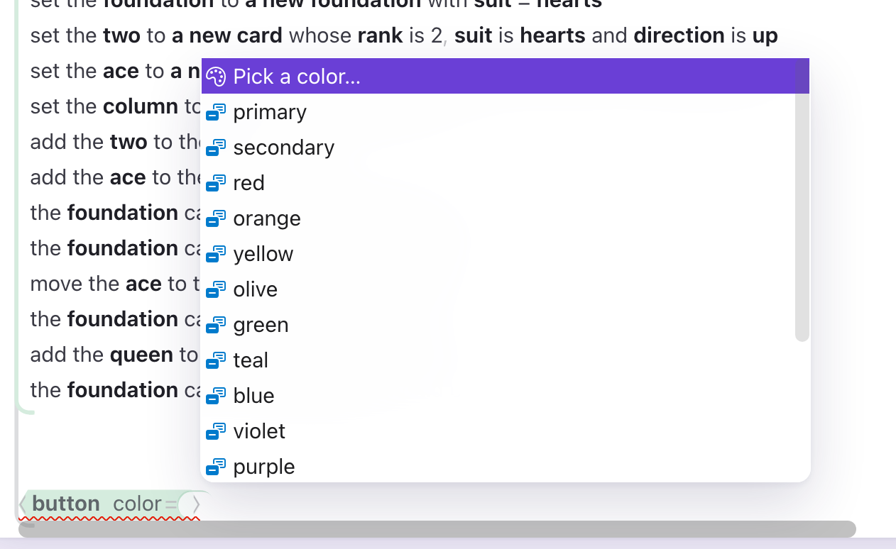
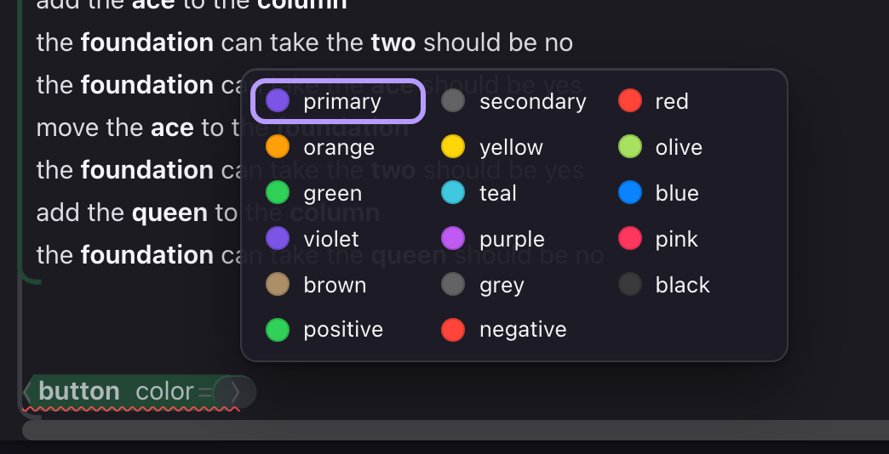
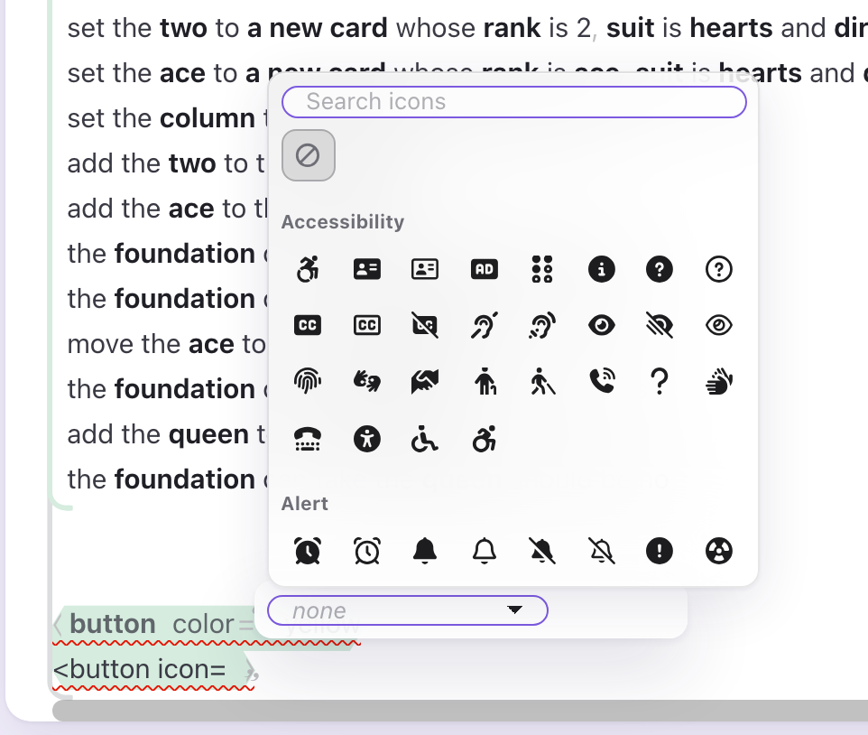
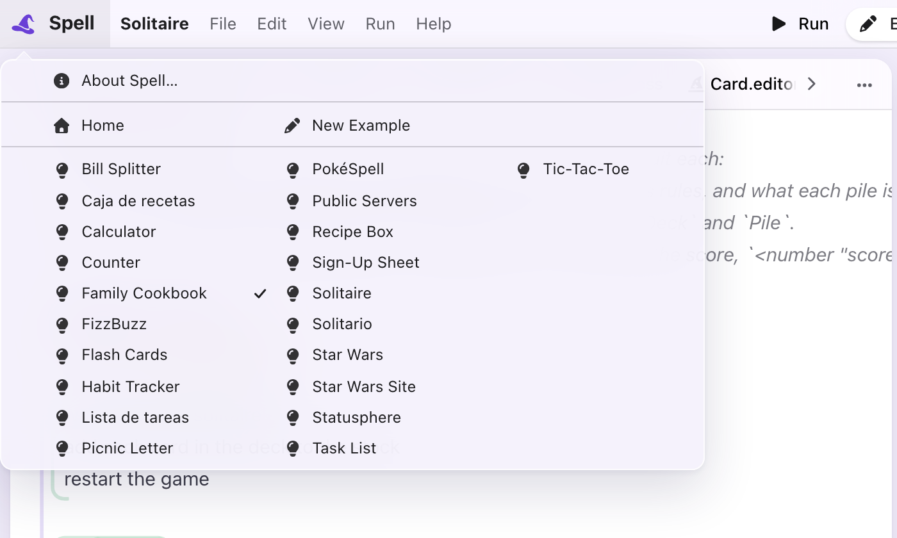
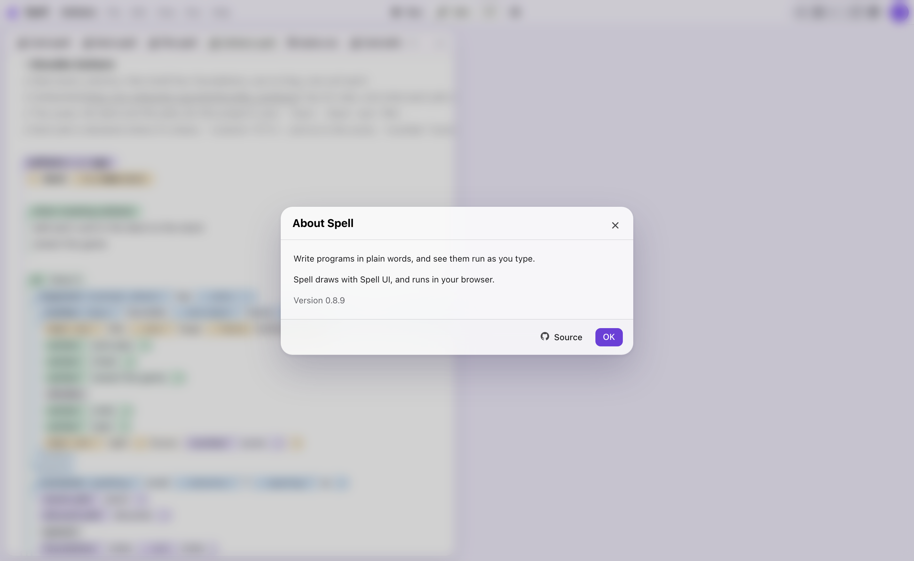
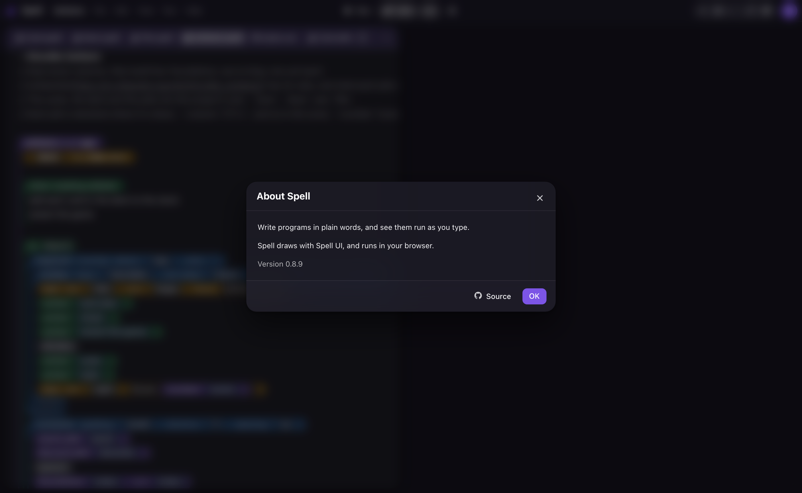

This is a standing epic to work on the editor, including the theme-bench and theme editor, and ui-components.
In other epics, if there is *major* work that is on the editor itself, they should come here.
If
you think I should move it here, ask me -- I may want to keep it in the other session to get it done
immediately (e.g. in that session's worktree).
To get us started:
- Overall goal is to polish the editor over the next couple of weeks so I can
release a preview on the web.
- Creating an app should be FUN -- "All Magic, No Fuss" is our
mantra.
- Someone should be able to completely make an app without looking at Spell code, e.g.
using drag and drop to create components and using the inspector sidebar to tweak things.
-
Eventually I want to be able to do agentic development in the app, to the point of creating an entire
app. The paradigm we have with epics is a good direction to start with, where I can select things and
say "change this." Once that bridge has been crossed, it's much easier to think about full-on agentic
development ("I want an app where...")
- Desktop/Mac+Windows is the primary target, then tablets. Not very concerned about phone usage at
this point -- we'll need to do a rethink for phone usage and I'm not ready to take that on now. Not
concerned about Linux now either.
- Editor should be usable on a laptop screen with the OS
menubar / browser chrome, so things need to be tight vertically. Adding a new feature shouldn't just
be "add a new row in an existing panel" -- each new row makes things less usable on a short screen.
When adding features, think about semantics to things going into `...` menus, how toolbars will be
compressed, etc.
- All of the changes we make to the editor itself should be reflected in new
capabilities of the ui-x widgets or custom widgets we make for the editor itself if absolutely
necessary. Don't reach for CSS tricks to accomplish something in the editor if it would make more
sense to push it into the base component.
- In fact, we will use the editor to edit the editor
itself! The goal is "turtles all the way down" -- EVERYTHING in spell is built on top of the <ui-x`
widgets, and can be hacked and customized directly within spell.
- Spell programs, including the
editor, are SPARSE and MINIMAL CODE, but for maximum visual appeal and maintainability.
-This is
a stark contrast to current AI development practices, where each screen generates customizations in
terms of tons of one-off components or eloborate CSS hacks (or endless tailwind classes).
- If
you find yourself reaching for a custom widget or CSS, stop and ask if there is an existing widget
that is close, then ask me if we should just adapt that widget before creating a new one.
- An
example of this: I want to work on the aesthetic of e.g. the views header, where the tabs read like a
collapsable button group, with optional actions to the right. It feels disjointed right now, and e.g.
the file tab bar should be in the same paradigm -- I hate the way it looks now. It feels like we have
multiple ways of saying "a group of pills which can be singly OR multiply chosen" and neither of them
integrates well into a header. Stretch to figure this out with the current components.
- Lean into getting Glass/Fruity working very very well, tuning them closer to the modern MacOS
aesthetic.
- Not concerned with the other themes right now, I have a pinch hitter for working on
themes coming online in a couple of weeks. Don't spend a lot of time getting the preview to work in
every theme, but don't do things that will make theming harder.
- The editor should feel like an app, which probably means the top bar should be connected to the top
of the browser window. So top bar should be short.
- Editing an app in the sidebar should edit
the source code, which can then be saved. This can be a bit tricky, but this is vital for making the
editor the main way you create spell apps. Think about how to accomplish this.
- There is also
the divide between "edit this thing" and "edit the base so all things work like this. Figure out how
to show this divide.
- We are going to need a way to create new elements on the page, move things
around, multi-select (click with shift/controk key down + drag-on-the-bg-to-select).
- In "code
mode", I should be able to see the spell and JS/TS/py/etc code side by side, and clicking on e.g. a
line in the editor, the ts output, the item in the views panel, the thing on the screen should all
follow along.
- The views inspector is a good start, but:
- it should be multi-select
- we need icons for all of the various things, and we need to be able to filter
- I'm unclear of the role of the Things and Templates panels, they may be useful but my intuition is
that they should be folded into the other elements of the page.
The VSCode popup which shows when you are editing is a) ugly, b) distracting, c) not focused on a novice user. The current popup was useful when we wrote it weeks ago, but it doesn't feel at all like the rest of the app.
So, push yourself, let's make an elegant, simple, intuitive editor that allows non-programs to make "real programs" and HAVE FUN while they are doing it.
Plan rewritten from their note: the collapsible header reads as one thing, shown in pictures first
Go ahead: Owen wants this phase built
Go ahead: Owen wants this phase built
Plan updated: panes join with parent, as in ui-section
Home and the theme page's bar: the Tahoe look, two pills with a gap.
Home's and the theme page's bar is two pills; built, not merged yet
More padding inside the Run and Edit buttons.
More padding in Run and Edit; built, not merged yet
Attached or floating panel edges become a theme's choice.
Attached or floating is a theme's choice; built, not merged yet
Keeping the bar in Spell, on the condition you set: a loading hero covers the whole page until it's ready. Checking that's what shows.
A hero holds the whole page until the bar and code are ready; built, not merged yet
Explained in plain words, with a picture; three options to pick from
Queued as a todo: icons in the tabs and the dropdown
Queued as its own phase, P8 · Notebook Header
Explained with Solitaire's card; nothing to decide
Queued for a new phase, Rethink Edit Scope
Explained what stayed and why; nothing to decide
Queued for Rethink Edit Scope
Explained: nothing to decide
Maybe obsolete: P10 This Or All, which this call waited for, is done; a card made in a loop is still read-only on All
Maybe obsolete: its second half, a new project with nowhere to add, went with J38 (P15, New makes a blank app); moves across files still say so
Moot since P20 (commit 54086f1cc, T37 + T38): AppMenus.spellml now holds File, Edit, View and Run and their titles; J60 records the four rows that stay TypeScript
Maybe obsolete: P23 drafts and P24's discardChanges changed what Discard Changes does; the preview's StartingPoints half may stand
Moot since atmosphere P26 (commit 3c2ed1133): publishing goes by the space's role, this.roles.may("publish"), not the local-person stand-in
Replaced by I46 (commit c9e51b682) and J80: Owen picked the ☰ menu on a tablet's width, and Run | Edit keeps its words
Built in f57f0359c
Moot: data's rename landed, and Card.editor.spellml says <spell-property-editor "card"> (merge 50ecd12fb)
Reversed by T83 (J153): Owen, "Don't need the 'more files' button when all of the tabs are visible."
The Files button now shows only while some file isn't in view, scrolled out of the row or put away;
all-items-always is deleted from Spell UI.
Owen's redirect kept the Inspector card's crosshairs (its removal was a misreading of "the inspectors button"); this J is about the top bar's menu of cards, which stays gone, read as the way to "hide the sections of the inspector sidebar separately".
Revisited (Owen: search back in the pinned bar, opening every dropdown with matches). The pinned bar has its search again, before its ✕: compact, wider while it's typed in. Typing opens every topic with a match at once, each listing only its matches, side by side under its name; they never overlap or run off the window, and more than fit across start a second row. Escape, clearing the field, a click elsewhere, or choosing or dragging a row closes them all; ↓ goes into the first, Escape (or ↑ on its first row) comes back to the field. The popup and the bar share one search. Pictures: j140-pinned-search-light.png, j140-pinned-search-many-dark.png.
Reversed by T83 (J153): Owen, "Don't need the 'more files' button when all of the tabs are visible."
The Files button now shows only while some file isn't in view, scrolled out of the row or put away;
all-items-always is deleted from Spell UI.
Done by P26 Data In Side Bar: the sample switch and writing in place use data's useSample() and the rest it built
Built since: <for each> in a drawing is a loop, not an element (language I19), tested
Maybe obsolete: P10 This Or All shows where each value comes from, with a button to the line; the tooltip's words are gone from the side bar's code
Done by P16 (commit e6f405655): chrome.css's data-tooltip block is gone, and no data-tooltip is left in the editor's code
Timing the CLI tests on a quiet machine
Not a bug: the Mac slept and the machine was loaded overnight. cli.test.ts alone this morning: 72 passed, and its one failure passed alone (J77).
Right-clicking a tab named the next file
Fixed: the tab is found by its place among the tabs, not among the toolbar's children, where the ⋯ dropdown sat first
Making an added view of your own that needs values draw, with each required one-of's first value written in
An added view of your own is told the first value of each one-of it must have (J78): the card adds as the ace of clubs. It still draws tiny and face down outside a pile: I45.
Finding why a selected plain tag stays on its old element after a redraw
A selected part follows its redraw: a button in a drawn thing (Counter's) is found again by where it's written, in the same thing's drawing; the Views watch now sees into drawn things' shadow roots. Test in editWithoutRedraw: typed code, the selection stays on the new button.
Loading the theme bench to catch the warning
Not reproduced 2026-11-04: the theme bench with all four pages (app, epic, ui, notebook), and the editor's Theme page, loaded headless with no 'UI.keyboard: the UI runtime isn't loaded yet'. Gone since P5, likely with the later Spell UI loading work; nothing changed for it.
The stale tests were fixed by language T87 (commit db60ebf38): sideBarEdits reads Counter.spellml now, in this worktree too
Fixed by language T87 (commit db60ebf38): neither test holds the old wording or Counter.spell, in this worktree too
Safari: partly see-through glass, no blur
Built: in Safari no glass blurs, the editor's or a component's: each is its theme's partly see-through fill
Pick a color or an icon at the caret, from the words list's first row
Built (commit 681e28026, on editor): a colour or an icon
attribute's value is picked at the caret.
-
In its quotes, the words list starts with Pick a color… (
color="|") or Pick an icon… (icon="|"); in Spanish Elegir un color…, Elegir un icono… (icono). An icon, which has no words, lists that row alone. - Choosing it opens, at the caret: the colour palette (every hue a round chip and its word, three to a row, the one written now in bold; arrows move, Enter picks), or Spell UI's icon picker, its search box focused. Below the caret, or above it where there's no room.
- A pick writes the value between the quotes as ONE undo step, the caret after it. Esc, a click outside or typing closes it and changes nothing; a letter typed goes on into the code.
- Why a row, not the picker by itself: the list already opens there (I70), so a picker opening too would fight it for the keys; a row is one more choice in the list already showing, and typing still filters the words.
-
Which attribute takes which picker is Spell UI's to say, through the help the language service
reads: the hues take the palette, an attribute of kind
iconthe icon picker. No tag is named. VS Code, which has no picker, gets no Pick row.
Checked: a probe in Glass light and dark: the list, the picker, the value written, one undo back to empty quotes.



Pasted and dropped pictures in Change This's box, sent with the request.
A picture pasted or dropped into Change This's box shows as a thumbnail under the words, with a ✕ to
take it out. Several can go at once, as PNG, JPEG, GIF or WebP. They're sent with the request. The
server writes each one beside the inbox (__change-pictures/c3-1.png) and keeps only its
path, never the bytes. spell app changes wait prints those paths under “Pictures sent
with it (Read each):”, so the session that takes the request reads them. Any other type is refused,
400.
light,
dark
Built, checking.
Built: the editor's own project shows a zone per view of its app, in its order: editor bar,
editor layout, file tab bar, project menu, file menu, edit menu, view menu, run menu, home row,
about box and versions box (<EditorZones>).
- Each zone is drawn as you type, about 2.3s after the edit (the compile delay). The program runs on the programs' runtime, afresh each compile and as a layout.
- What the editor draws itself shows as a dashed grey stand-in naming it, e.g. The editor's own: spell menu.
- About and Versions open from a Show button, filled with sample words and two sample versions.
- A drawing that throws shows its error in its zone.
building it
The code's cursor on a word naming a thing, like the stock or la reserva,
now inspects that thing. The Inspector selects it and the app outlines it. Other words follow their
line as before.
Building: the page server starts Claude itself, and detects it.
Done in 2283e31d2.
- With no session listening, the page server starts Claude Code itself, headless, in the project's folder.
- The box says: Starting Claude…, then Claude is working on it…, then the change lands, or the error says why.
- It finds Claude on the PATH, then in the usual install places (~/.local/bin, ~/.claude/local, Homebrew, npm).
- Not there: the box says so, links the install page, and shows the command to run by hand.
- A start that fails leaves a Start Claude button.
- The session may only edit the project's folder, read, and run spell app changes take and done. Judgement call J115.
Checked headless with the route faked, light and dark: epics/editor/tests/t66-*.png. A real session isn't started from a test: M11.
Adding Discard Draft to the draft capsule.
Built in 6cbd904b3: a grey Discard Draft, between "Editing a Draft" and Publish Draft.
- A trash can, beside Publish's paper plane.
- It's the project menu's Delete Draft: it asks first, with the red Throw It Away.
- Same capsule: 28px tall, both buttons 24px, 2px inside it top and bottom, 4px apart.
- Spanish: "Descartar borrador".
Screenshots: epics/editor/tests/t67-capsule-light.png, t67-capsule-dark.png, t67-confirm-light.png.
Writing the rest of a tag when a space is typed after its name
Built in 752d96ac7 (not merged into main yet).
- A space typed after a tag's name in the code editor writes the rest of the tag, with the caret where you type next.
-
<action+ space:<action "|" />, and the program's actions are listed at once. -
<divider+ space:<divider | />. A tag that holds nothing closes itself. -
Any other tag:
<segment+ space gives<segment |></segment>, with the closing tag written out in full. - One undo takes it back to
<action. - Nothing is written if more of the tag already follows the caret.
- The shapes come from the same table the suggestion list uses, so typing a tag and choosing it agree. The calls are in J118.
-
C4: a tag that closes itself always has a space before its
/>, whether typed or chosen. -
Also fixed: the browser test for
<act+ Tab still expected<action "|"/>from before I70 added the space.
Building it.
Done in 662d37d05.
- Nothing selected: the Code card is its bar alone, folded, with no chevron and no +. Its ✕ still hides it.
- So it's always in the column: selecting only changes its size.
- The cards glide to their new heights over 0.2s, as the selection changes or a card folds.
- Not while you drag a bar; none at all with reduced motion.
- Not a CSS transition: a card's height follows what it shows, which changes no style, so the editor runs the glide itself.
Pictures: nothing selected (dark), part-way through a glide (dark).
Building it: the words under a value the caret rests in.
Built in 3c93849f4.
- Rest the caret in an attribute's value for a second, and its words show in a small row under it, the value ticked.
- Typing, moving the caret, a scroll or the suggestion list hides it at once. The keys stay with the code.
- To step in: ⌥↓ moves the keys into the row (arrows, Enter chooses, Esc goes back), or click a word. Ctrl+Space is the suggestion list, with the same words.
- Choosing writes the word between the quotes, one undo.
- Only an attribute that lists its words, and at most 40 of them.
- How it looks is judgement call J121.
Pictures:
tests/T70-words-light.png, -dark.
Format Document re-indenting by structure, sharing the paste's rules.
Format Document now lays a drawing out by its tags (23ddb7058):
- a tag's children one level under it, its closing tag back at its level
- an
<otherwise>back at its<if>'s level - a body one level under its head, as before
-
attributes on lines of their own, and the lines inside
<css>or<markdown>, keep their place under their tag - Only the indent of each line changes, so the caret stays where it was.
- If a drawing would read differently afterwards, it's left as written.
- Paste uses the same rules, from one place now.
Every example's drawings already match. Solitaire and Solitario still change outside them: a trailing space, tabs on blank lines, and a continued line's two spaces. The examples are left as they are.
Taken up at once: agent editor-slices is on it.
cdc922355 The Inspector's code slices are drawn in the bubbly look, as the code pane is,
following the Bubbly look setting (SpellBubbly.showSlice(), which replaces
leaveOut()).
- A slice draws only the shapes wholly inside its lines. The action whose body it shows draws no band, rail or foot cut off at its edges.
- Its code starts 8px from the field's edge, and its paper is the card's.
- A slice kept for later isn't laid out or drawn till it's shown again.
- A file's editors now share one layout of it. Before, each slice of Solitaire's main file laid it out again, about 100ms each.
-
Typing and the caret work as before. Checked headless:
t72-slice-bubbly.mjs, screenshots t72-after-*.png in the epic's tests folder.
Taken up at once: agent editor-event is on it.
Found on main by the end-of-turn tidy, in commit 8a6b6bab7 and 1 more.
The commit is under this item's Commits (its git icon).
Still open: close it once it's checked.
Taken up at once: agent editor-curlies is on it.
Built in 3c7fbacc7.
-
Typing: a
{typed anywhere inside a tag's quoted value turns its two quotes into braces (color="bl{ue"becomescolor={blue}), the caret staying in the same words. A"typed right after a code value's{turns it back into text. Each is one undo step: undo right after gives back the plain character. - Menu: "Make it code" / "Make it text" on the value the caret is in, from the light bulb and the right-click menu's Refactor…; it's the language service's, so VS Code has it too. Spanish: "Convertir en código" / "Convertir en texto".
- Only attribute values switch: not a tag's quoted word, and not the words between tags (J126).
Screenshots:
the light bulb's menu, light,
dark;
after typing ", light,
dark.
Taken up at once: agent editor-diff is on it.
Built (b91095036):
- Headers: 'Current Published Version' over the left side, 'Your Changes' over the right; the 'Theirs is on the left…' line is now a short how-to: click a change's arrow to take theirs, ⌘Z puts yours back, Publish sends out Your Changes. Spanish too.
- Your draft stays on the right, and the right side is now the result: editable, and what Publish publishes.
- Accept each change: an arrow between the sides on each change (shown on hover) copies the published block into yours; ⌘Z in the right side undoes it, one change at a time. Buttons: Cancel · Start Again from Theirs · Publish (was 'Publish Mine Anyway'). The shape: J125.
- Bubbly: both sides are drawn bubbly when the look is on. It works cleanly: Monaco's diff editor lines its two sides up round each side's own view zones, and the taller lines are the same on both, so the lines still match. Two small flaws: a declaration's band stops sharply where unchanged lines fold away, and a name Spell can't read isn't drawn as a pill.
Not done: the arrow's tooltip is Monaco's English 'Revert Change'.
Checked: the drafts test, 6 passed (was 5; the new one takes one of two changes and publishes the merge). Pictures: tests/t75-publish-clash-{light,dark}{,-taken}.png.
Taken up at once: agent editor-compiledbtn is on it.
Done in 9fc6f8136 and dd57bca24.
-
The compiled code's button: a new top bar button between
</>and Inspect app's crosshairs. It shows the compiled code beside the code, or hides it. Its icon is the language it shows (JavaScript, TypeScript, Python) and its tooltip names it ("Compiled JavaScript", in Spanish "JavaScript compilado"). It's pressed while the compiled code shows. It has no menu: the compiled code's own tabs choose the language. - The file bar's ⋯ is gone. Its one menu chose which compiled code to show, and the button and the compiled code's tabs do that now. Nothing else lived in it.
-
More: the ▾ that lists every file now has a file icon (
file outline) before its caret, the tabs' icon size. This is a new Spell UI toolbar attribute,all-items-icon(J134). -
The JS icon is Font Awesome's brand icon. There is now one table for the languages' looks
(
LANGUAGE_LOOKS), which the compiled code's tabs, the button and the Program panel's tabs all read. TypeScript gets Font Awesome's TypeScript brand icon, which the app's icons already include. Before, it used a plaincodeicon.
Screenshots, light and dark: t76-*-bar.png, t76-*-more.png, t76-*-compiled.png.
Taken up at once: agent editor-closetabs is on it.
Built (e2da6d8de): when the file tab bar is in More mode (more files than its 8, some only in the list), each tab has a ✕ -- on the chosen tab, and on any tab hovered, as VS Code's.
- The ✕ closes the tab: it leaves the bar, the file still in the More list; picked there, it opens again as a tab.
- Closing the chosen tab shows its neighbour's file (the one after it, else before). The last tab left can't close.
- A middle click on a tab closes it too.
-
Which tabs are open is kept per project across reloads: the bar's own memory of its open tabs (the
toolbar's
remember, a browser pref per project), so no second store. - While every file fits, no ✕: today's behaviour.
- No key: ⌘W is the browser's, closing the page's own tab.
-
Spell UI:
<ui-toolbar>hascloseItem()for amax-visiblerow. The tabs now go by their file's path, not their words, so a drafted file's tab is no longer forgotten when its draft goes.
Checked headless on PublicServers (13 files), light and dark: t77-hover, t77-closed,
t77-closed-chosen, t77-list (t77-close-tabs.mjs).
Taken up at once: agent editor-cardbars is on it.
The Inspector's cards come and go together now.
- The Inspector card's header has no crosshairs: the top bar's Inspect app does that job.
- No card has a ✕ of its own; each still folds with its chevron.
- The top bar's Inspector button lost its menu of cards (J136): it opens or closes the whole column, every card in it, as View › Inspector does (that one without starting Inspect app).
- A list of hidden cards remembered from before is no longer read, so no card stays hidden.
- The texts nothing reads any more are gone (the card's Close and Hide, the menu of cards).
Checked: the Inspector and menu bar browser tests (30 passed); headless, Solitaire with a card selected: no crosshairs or ✕ in any header (t78-cards-light / -dark).
Redirect (Owen, 2026-11-15): "Put the inspector crosshair back in this header" -- the Inspector card's crosshairs is back, as it was (029fccef8). The rest stands: no card has a ✕ of its own, the top bar's Inspector button has no menu of cards (J136), every card shows while the column does.
Taken up at once: agent editor-cardbars is on it.
The Code card's header says Add Event and Add Action, an icon and its words each, in place of the bare + and its caret.
- Add Event: the same list of events the + showed; choosing one writes its empty handler, its code taking the cursor.
-
Add Action (for a thing; J137): writes an empty
to "new action"at the end of its type (new action 2... when taken), its code taking the cursor; renamed in its signature as any action is. - Under 300px of card width, their icons alone, their words the tooltips: the header never wraps (checked at 260 and 220px).
- Spanish: Añadir evento, Añadir acción.
Checked headless on Solitaire: Add Action added to new action to the card's actions, the cursor in its body (t79-added-action-light); the header 19px tall, as the other cards'.
Taken up at once: agent editor-palette is on it.
The pinned palette is the top bar's second row (51c405731).
- Edge to edge, a hairline under the top bar, 32px: its topics' names, quiet like File · Edit · View.
- Each name opens a menu of everything filed under it: a click adds one, a drag places it, either closes the menu.
- This app (or This page) first; the row scrolls with ‹ › when the names don't fit.
- An ✕ at its end unpins it, in place of the pin.
- No search of its own: the top bar's + has one (J140).
- Pictures: t80-before-*, t80-after-* and t80-after-open-*, light and dark.
Taken up at once: agent editor-palette2 is on it.
The palette's groups are ONE table now,
paletteGroups.json
beside ComponentDefinitions, seeded from today's grouping so nothing moved.
-
A page to arrange it: Spell UI's Palette groups page (
<ui-docs-palette>,docs/palette.html). A column per group; drag a component to another group or place, drag a group by its handle, type over a group's name, Add group, a group's ✕ (its components go to Not in the palette), then Save. -
Save writes the table through the page server (
PUT /api/ui/palette-groups, the page's token), formatted asyarn formatdoes. The editor's palette shows it on its next load. - A component the table doesn't name still shows: by today's rule, at the end of its topic's group.
-
The page server needs a restart to load the new route (the next
spell server start, or the side bar's Restart Page Server).
Taken up at once: agent editor-tabsx is on it.
Built (ce3a5f453):
-
The Files button (file icon + ▾, listing every file) shows at the file bar's right end always,
however few files: a new Spell UI attribute,
<ui-toolbar all-items-always>(Spanishtodos-siempre), set on the file tab bar. J135 noted as reversed. - A tab's ✕ shows in its file icon's place while hovered, in the same spot (both icons in one grid cell of the tab's icon slot); no room kept after the name any more.
- Closing still applies only in More mode, as T77: J144 says why, and that the ✕ is hover-only.
Checked, light and dark (t82-*.png,
t82-file-tabs.mjs): 1 tab (Counter), 3 tabs (fizzbuzz), overflow (PublicServers): the button's right edge on the
bar's (630 = 630) in each; every tab hovered keeps its width to the hundredth of a pixel (e.g.
147.19 -> 147.19); ✕ and file icon centres the same (135.9 / 135.9); a hovered tab's ✕ closes it.
Tabs are ~4.6px narrower than before: the ✕'s reserved room is gone.
Tests: UIToolbar 27 passed (+1, all-items-always); InputEditor.browser 19 passed (two
T77 tests rewritten: the button with every file a tab, and hover-only ✕ keeping width and spot).
Reversed by T83 (J153): Owen, "Don't need the 'more files' button when all of the tabs are visible."
The Files button now shows only while some file isn't in view, scrolled out of the row or put away;
all-items-always is deleted from Spell UI.
Taken up at once: agent editor-chrome is on it.
Built, by Owen's 7 points:
- The pinned Add bar wears the top bar's own fill and blur, the top bar's hairline under it instead of between them. Its topic names are centred on the window, Search and ✕ at the right (J151).
-
The code panel's file tab bar is the top bar's colour, as seen.
--spell-menu-bar-backgroundrepaints the theme's wallpaper under the bar's fill, fixed to the window (J150): light 239,233,255 at the tabs against the bar's 237-246. - White under the code (near-black #1c1b22 in dark), on the code's pane.
-
A ✕ at the file bar's far right hides the code panel, as
</>does (Spell'shide the code; "Hide the code" / "Ocultar el código"). -
The Files button shows only while some file isn't in view: scrolled out of the row, or put away.
Spell UI's
all-items-alwaysis deleted, reversing T82 (J153). - The Inspector cards' bars are the top bar's colour. Their glass, behind the whole column at first, went inside each card in I190.
- No Inspector button in the top bar: View › Inspector and the card's ✕ do it. + is the Run | Edit group's last item, right after the crosshairs (J152).
Checked headless, light and dark (t83-chrome.mjs; t83-before-*.png, t83-after-*.png). The mode group's glyphs are centred at the same height.
README-app and the app's AGENTS.md updated.
Tests: UIToolbar 49 passed (+2), UIMenu, item and toolbar 350 passed; InputEditor.browser 20 passed (+1, the ✕; T82's "every file fits" test reversed); Inspector.browser 25 passed. Two integration files (addAndMove, thingsAndTemplates): 19 passed, 8 failed. The failures expect older Solitaire contents and selections (a Spacer, Card image, the menus' items); they look unrelated to this change, but I didn't run them without it to check.
Taken up at once: agent editor-chrome is on it.
Any Spell UI menu's overflow list longer than the window goes into columns, the Files list among them. Top to bottom then across, the rows a little tighter, the chosen one ticked. It hangs towards the start, or across the window, rather than being cut (J155). JarvisNew's 59 files: 3 columns inside the window at 1440x860 and 900x700, home.spell ticked (t84-files-columns-*.png). Tested in UIToolbar: 120 items in columns, each column's rows stacked, the window's bottom kept.
Taken up at once: agent editor-chrome is on it.
Discard is a link: a tertiary button in the draft's amber, no fill and no room of its own, its own underline on hover, 4px from Publish (t85-after-*.png).
Taken up at once: agent editor-chrome is on it.
The pinned Add bar never scrolls while its names fit: three columns, the names in the window's
middle while there's room, moving left (never scrolling) short of it. Measured at 1280, 1290, 1440
and 1920 wide: no overflow; Add View to Social centred at 1440 and 1920. The cause: the search's
room was kept clear on both sides (180px each, 360px focused). Add View in bold before the
names; each topic has its icon (paletteGroups.json's new icon, picked on the palette groups page); the top bar's hairline shows between
the two bars. Shots: t86-after-light.png, t86-after-dark.png. Commit 465652f20.
Taken up at once: agent editor-chrome is on it.
The bar's search: a magnifying glass at its start, 150px wide typed in or not, and a ✕ inside its end while it holds text, which empties it, closes the results and keeps the focus in the field. Shots: t87-after-typed-light.png / -dark.png, t87-after-cleared-*.png. Commit 465652f20.
Taken up at once: agent editor-chrome is on it.
The file tab bar's room left and right is the same as above the first tab: 7.5px each (was 10px
left, 19.3px right of the ✕). Measured by
t88-file-bar-room.mjs
(t88-before-*.png, t88-after-*.png).
Taken up at once: agent editor-chrome is on it.
The draft bar says "Draft" ("Borrador") under 1360px wide. The long words made the top bar scroll under about 1300px on a site's editor. Above that it still says "Editing a Draft".
Taken up at once: agent editor-chrome is on it.
The top bar's code, compiled code, Inspect app and + are circles, 26 x 26, glyphs centred and 14px
apart (were 24.4px apart, in 38 and 34.8px pills). Owen's redirect: the look is Spell UI's
<ui-item appearance="circular">, not the app's CSS (J157). The + keeps a TODO
rule in chrome.css until Palette.tsx takes the word (t90-bar-*.png).
Follow-up: the + now takes appearance="circular" itself, and the app's stand-in rule is
gone.
Taken up at once: agent editor-chrome is on it.
The Inspector card's Inspect app is the top bar's button: the same item, Spell UI's circular, in a
header's segmented menu of its own. Pressed while inspecting it's the same 26 x 26 circle, same fill
and inset shadow (white with a 0.28 inset in light; 20% white in dark) (J157,
t91-inspect-look.mjs, t91-card-*.png).
Taken up at once: agent editor-pinbar is on it.
The ✕ at the bar's end is gone: the popup's pin, shown pinned, sits at the bar's far left (under the top bar's logo) and unpins it. Its tooltip is Unpin / Desanclar, the popup's pin's too. Commit 465652f20.
Taken up at once: agent editor-chrome is on it.
"Spell" is the loading screen's wordmark, one style: --spell-wordmark-font,
-weight (800, was 700) and -tracking (-0.035em), on index.html's :root,
read by both. The hat's glyph is 4px from the word, drawn (was 12px), near the loading screen's
proportion (t93-wordmark.mjs, t93-before-*.png, t93-after-*.png).
Taken up at once: agent editor-selectlook is on it.
Taken up at once: agent editor-addaction is on it.
Made todo T4 to follow this up.
Made todo T53 to follow this up.
Finding which frame of the theme bench reads UI.keyboard before Spell UI's runtime loads, and making it wait
Checked headless on today's main: the theme bench's four frames load with no 'UI.keyboard: the UI
runtime isn't loaded yet' in any frame's console (250 lines read).
Go ahead: fix this here
Checked headless: a tip inside a clipping box shows whole, in the top layer; 19 tests pass. Built in 1dd9bce69, already on main.
P27 Live Edit Everywhere (commit 6ddabacc2, J81) settled it: each import is weighed and swapped, and a new property's attribute shows with no Restart; a program with no app running again was chosen as right
Go ahead: fix this here
Go ahead: fix this here
Making the palette read its topic names from Spell UI's dictionary, so a Spanish page shows them in Spanish
The Add palette's topic names come from Spell UI's dictionary in the page's language: Formularios, Botones, Texto on a Spanish page (240237e76)
Go ahead: fix this here
Go ahead: fix this here
Writing a fix for each of the six look problems the designer review left, then building them
Fruity's light panes half white, Glass's light field edges 22% grey, Inspector cards fade at their foot, and the app keeps 320px at a narrow window (code 240px, the Inspector giving way to 300px); Face's track and the Views corner were already right
Made todo T52 to follow this up.
Fixed by T52 (commit 91fc72596): a button in a drawn thing is found again after typed code or a side-bar edit, tested
Made todo T51 to follow this up.
Fixed by T51 (commit cc28b09d5, J78): a view added from This app is told the first of each one-of it must have
Made todo T50 to follow this up.
Fixed by T50 (commit ff2467cd7): a right click finds the file by the tab's place among the tabs
Building it
N more on each topic's header, every topic listed, a search over all of them (88ad0025e)
Building it
Click or drag to add to the page, at the left; the search shorter, on the right (88ad0025e)
Found when it breaks: a selection inside a closed row empties the Views tree. Not fixed yet.
Finding why the Views tree empties when a folded part is inspected
Inspecting a part opens and scrolls Views to it
Every drop was refused in the editor: its layout's copy of the runtime replaced the program's rule for what takes a drop
Fixed in a49b7b4f1: each copy of the runtime adds its own rule for what takes a drop. Main had it too. New test: an ace dragged to its empty foundation lands, in Run and in Edit.
The menu's close check ran after Delete had greyed its own row
Fixed: the menu decides to close as the click starts, before Delete greys its own row; a test deletes by click and by Enter
Icons for every editor menu
Icons in every editor menu: an icon column in
All Cards' fields, cards and tests
All Cards edits the type: rank and suit as pills written into their one-of, worked-out fields as their Spell, and the Events, Actions and Tests cards (8726228db)
Fixed by commit 1e87c014b (the bar's groups keep their width), then I46 (commit c9e51b682, ☰ on a tablet's width)
Code fields' wrap and corners
Fixed in part (b5?): code fields now wrap at their words' measured widths, so 'clickable when' shows 'it is face up or its pile is the stock' on its first line, not 'it is face up or its'; corners are the text inputs' own radius (6px in the Inspector's theme, the same as its inputs). Still rough: a one-line row's first line wraps short by the width of the hidden header words, since the code editor measures the line's text before it's hidden ('of the solitaire' goes to a second line though it would fit).
Building it in Spell UI's
Built in Spell UI as
turning it on in Views
The Views tree pins its path (sticky-path), on in d8a224d46
fixing
Fixed in 7420be5b9
fixing
Fixed in 7420be5b9
fixing
Fixed in d8a224d46
fixing
Fixed in d8a224d46
fixing
Fixed in 676615877
fixing
Fixed in c80269515
Made todo T46 to follow this up.
Made todo T49 to follow this up.
T49 looked and closed it as not a bug: the Mac asleep and the machine loaded (J77)
Fixed by commit aef2f0e36 (J82): a card in no pile draws at a column's width, face up
Fixed in P27 by commit 6ddabacc2: a property an edit adds shows as its element's attribute with no Restart, tested
Made todo T60 to follow this up.
Maybe obsolete: commit 3a7829e86 takes the blur off in Safari; only a real Safari can confirm the wash has gone
P28: being built by editor-p28
The loading screen now sits above everything (z-index 2147483647, the ants and hover box are 2147483000), and the selection's ants wait until it has gone, fade and all (PageLoading.whenGone()). Headless: a part selected while the hero was up drew ants over it on 0 frames (editorPolish.test.ts).
P28: being built by editor-p28
The outline follows the code's cursor: clicks, and now the arrow keys, Page Up / Down and the rest, to another line; never while typing (the text changed) nor when code moves the caret. On a line that draws nothing, nothing is selected and the properties card shows nothing (Choice 2, A). Compiled code's clicks still leave the selection on such a line. J43 taken back.
P28: being built by editor-p28
A line anywhere in a tag (its attributes, content, closing tag) selects what the innermost tag around it draws, found from the parse (SP.SpellProject.partPlaceAt()) and matched to the places the compiler stamps; inside drawn things' own drawings too. Tic-Tac-Toe: {the label of the square} selects the 9 buttons, {draw its board} and </content> the first content. Solitaire: a foundation's placeholder line selects the 4 placeholders (the stock's placeholder isn't drawn at the start: the stock is full).
P28: being built by editor-p28
A paste takes the indent where it lands (SpellTyping): its first line at the caret's indent, the rest shifted with it, keeping their indent from it; one undo takes it back. At a line's very start, a one-line paste, several carets or a whole line copied: as before (Monaco's own). Cmd+V only: the right-click menu's Paste still pastes as copied.
A paste ending in a newline keeps what was after the caret at the caret's indent; your Solitaire paste now lands above, nothing pushed out
P28: being built by editor-p28
Suggestions show by themselves where they help: after < starting a tag, after a space inside a tag, in an attribute's quotes, and after its / 's / of mid-line (su / sus / de in Spanish) -- ONE list, SUGGEST_WHERE_IT_HELPS in codePopups.ts. Typing <act shows action at once. The code pane's ⋯ › Code Editor Settings… › 'Suggest as you type': Where it helps (default) | Everywhere | Never: only on Ctrl+Space.
P28: being built by editor-p28
Spell UI's tags and attributes now have help: after < the tags (spell's own first), inside <button the button's attributes, in color=" its words, each row saying what it is; Spanish files get Spanish names (tamano, rojo). Hovering a tag or attribute says what it is and the words it takes. A thing's properties say what each is in the row (turn Whose turn it is: X or O). From a new Spell UI help table (help.generated.ts, written by yarn site:data), read through the component pack, so VS Code's language server gets the same.
The path line now sits right under the Views header; measured headless, 0px apart (was 12px)
Go ahead: fix this here
Finding why this window's Spell language server is the atmosphere worktree's, then making each window run its own
The extension finds each window's own app/ folder now: rebuilt and installed; reload the window to pick it up
Typing settles 2 seconds before the app takes the edit (was 10); merged into main, so test.spell.app has it once its page reloads
P28: being built by editor-p28
Pasted markup (its first line a tag) is laid out as a tree: each line one level under each tag still open above it, a closing tag back at its tag's level, the whole at the caret's indent; one undo. Shift+Tab, or Backspace at the end of a line's indent, on a line with lines under it takes them out a level too: a tag's children and its closing tag, or a type's / property's body; one undo.
Cmd+[ and Cmd+] now move a tag's children and closing tag with it, one undo; tested on a real Monaco
Tab now carries a line's children when the caret is at the end of the line's indent. Before
<segment>, it moves the segment, its toolbar and every child, and the closing
tags, in a level as one undo. Before a line with a body, the body goes in with it. The caret stays
at the line's new indent. Tab anywhere else is unchanged: mid-line, over a selection, or taking a
suggestion. Shift+Tab already took them back out.
before,
after
Inspect app's crosshair is in the Inspector card's header, before its eye; the tip is words alone. Merged into main
Go ahead: fix this here
The tests the examples moved past are brought up to them. Two real bugs they turned up are fixed, and the rest are listed with their causes:
-
Fixed, two bugs: an undoable action (every action a program writes is one) reported that it
takes no arguments, so the Code card gave 'put a card on a pile' a run button with no pile (parser
core's
declareAction(), which language owns). Also, the Code card's + found no type written today (a card -- ..., with no colon), so it added nothing. - Fixed: 'a pile' is a badge again in the action's signature: a type that only its sub-types have things of is now known through them.
- Stale, brought up to the examples: ScopeExplorer (35 of 36), the action completions' anchor line, eventsInCode (4 of 4), solitaireDrag (2 of 2, already fixed by language I82), the unsaved tip's words, thingsAndTemplates' add-menu list and rank line, and addAndMove's blank program, now in plain Spell because the tag form is gone.
-
Still failing:
-
ScopeExplorer's 'no sources' test: the compiled declarations have no entry for
a card belongs to one pile(language's). -
2 action-completion tests: a half-typed tag such as
<action "loses every method of the program (a parser regression, language's). - addAndMove: a part dragged from the palette is no longer added.
- sideBarEdits (9) and thingsAndTemplates (2), against examples Owen has since rewritten.
-
ScopeExplorer's 'no sources' test: the compiled declarations have no entry for
Go ahead: fix this here
Queued: built right after P28 and P29 merge into main
Writing a proposed fix, then building it
the right-click menu's Paste now goes through the same re-indent as Cmd+V (SpellTyping.paste()): first line at the caret's indent, the rest kept from it, markup as a tree; one undo; a whole line copied, several carets or a one-line paste are still Monaco's
Go ahead: fix this here
Queued: built right after P28 and P29 merge into main
Writing a proposed fix, then building it
attribute completions, an attribute's words in its quotes, and hovers now work on every line of a tag split over several: the language service looks back for the open tag (openTagBefore()), its later lines indented further than the tag's; VS Code gets it too
Go ahead: fix this here
Writing a proposed fix, then building it
Enter after an opening tag (not self-closed, not
, not a closing tag) indents the new line a
tab; Enter between <x> and </x> puts the caret a level in and the closing tag on its own
line at the tag's indent; two Enter rules in Spell's language settings, Monaco's and VS Code's, kept
the same by a test
Making each error and warning on load go away at its cause
The editor opens with a quiet console: the old code-suggest choice reads as Everywhere; the editor's Spell holds editor parts; the Solid diagnostics fixed at their causes; the compile cache answers a miss 204
Answered: layered on purpose, not a wrong-history bug; proposed fix written
Go ahead: fix this here
Fixed by I104: ⌘Z and ⇧⌘Z each sit in one layer now. The running app's keys are marked
layered over the editor's, and keys the app doesn't use still fall through to the
editor. The 'registered twice' warning is gone.
Go ahead: fix this here
Finding why a project asks for a Spanish names file it doesn't have
A compile reads only the names dictionaries its project's index lists (namesLanguages, from spaces' getIndex()): Solitaire and the editor ask for no .es.names.json5, so no 404s; a project with one still gets its title words (bf09455cc; J106)
Go ahead: fix this here
The caret moves at once with the Inspector showing: the arrow keys' follow waits for the cursor to rest 120ms (J110), one Inspector update for a run of presses; another line of the same tag does nothing again; the Code band keeps its code editors between selections. Solitaire key-to-frame 185 => 4 ms median, Tic-Tac-Toe 80 => 2 ms.
editor-i70: a tag or attribute chosen from the list written whole, the caret where you type next
A tag or attribute chosen from the list is written whole, the caret where you type next: <act + Tab gives <action "|"/> with the program's actions listed; <divider/>, <children/>; <context-menu>, <content>, <toolbar> a line in then </>; <button>|</> for a few words; <tab "|"> for one a quoted word names; <icon |/> for one that holds nothing (Spell UI's help table now says which). Attributes (your note on I55): color="|" with its words listed, fluid by its name alone. Nothing doubled when the tag or its = is already written. One table, LSP.CompletionShapes, so VS Code gets it too (M27). Choices: J107-J109. Commit 5e1d67c2b.
Measured headless: the code pane's ⋯ now 16px from the pane's right edge (was 8); the compiled code's ✕ is in the same bar
Built and checked headless: see the commit
Built and checked headless: see the commit
The code pane's ⋯ is now a menu of ticks, like the top bar's menus. Under Show Compiled Code,
JavaScript, TypeScript and Python each keep their own icon, with a tick column to the left: ✓ on the
one showing. The None row is gone: click the ticked row to hide the compiled code, or another
row to switch. Pictures:
tests/i73-none-light.png,
i73-js-light.png,
i73-js-dark.png.
Built and checked headless: see commit 9b23d2c97
Built and checked headless: see commit 9b23d2c97
In Edit, the program's own right-click menu first, a thick line, then the editor's
In Edit, a right click on a part inside a program's own right-click menu shows that menu first, exactly as Run draws it (titles, icons, keys, greyed / ticked; a click runs it), then a thicker 3px line, then the editor's Cut / Copy / Paste / Duplicate / Delete, Show in Code, Inspect, Change This. No program menu there: the editor's alone. The Views tree's row and the Menu key (Shift+F10) follow the same rule; Run is unchanged. Picture: Solitaire, a card right-clicked in Edit. Commit 7d760236e.
Code's icon then Inspect; after them, 'Editing a Draft' and a Publish button; checked headless
One row over a menu of columns; checked headless on the examples and the guides
The pill's ✕ is gone; Esc lets go; tests 23/23
Nothing selected: the top card 150px, Views the rest; a selection brings back the split you'd set (measured headless: 150/690, then 504/336, then 150/690)
The help table loads with Monaco; checked headless: <segment ... col offers color first
A </> end tag drawn tight in the editor: 28.2px wide, now 23.2px; an end tag's < and a /'s > narrowed to the brackets drawn over them, the caret and copy unchanged (fcecad50d)
a drawing's tag that declares the member it draws (<number "score"/>, <stock-pile "stock"/>, the foundations and columns) drawn as a round pill, its ⟨ /⟩ not drawn; which tags is the parse's own (SP.BubblyDrawing.declaringTags); others keep their points
Dividers edge to edge in every editor menu; checked headless on View
d4e2e58
The lines inside a menu now stop 12px short of each side: the top bar's menus and the right-click menu alike.
Only the dashed line between a program's own right-click items and the editor's still runs edge to edge.
Screenshots: tests/i85-before-*.png, tests/i85-after-*.png, light and dark.
Fixed in fc37902dc: once an edit typed or pasted in the code is drawn by the running app, the Inspector follows the cursor's line once, as a click there would; a line that draws nothing keeps what was selected. Typing never moves it mid-word: it waits for the run. Test: editorPolish's I87s (Cmd+X / Cmd+V of two actions in Solitaire selects the one on the cursor's line once drawn; a comment typed keeps the stock pile selected).
Fixed in c917e8ac5: the code's follow-along read the selection and trail in its effect's second half, through Inspector.selectWrittenAt(); it reads them untracked now, on purpose. Also the Inspector's theme loader no longer reads its own signal in the column's body (brandTokens, on load). Test: editorPolish's I88, loading, clicking and editing Solitaire logs no STRICT_READ_UNTRACKED.
Headed 'Show Compiled Code', its first row 'None', ticked while none shows; Spanish too
Pen-on-a-square on a draft's tab and 'Editing a Draft'; Publish's paper plane; one capsule, inset border; checked headless
The chosen tab's shadow is whole; Spell UI's toolbar and menu tests 248/248; visual baselines not rerun
Hovering a drafted file's pen (its tab) shows a Spell UI popup after the hover delay: 'Updated in your draft.' and a link, 'Discard changes', which discards THAT file's draft, whichever tab; the tab stays as it was. Written in SpellEditor.spell; words in English and Spanish (AppTexts); editor.discardDraftOf(path), which Discard Changes now calls for the file showing. The 'Your draft' + Discard line under the tabs is gone. Test: draftTip.test.ts; screenshots tests/i92-tip.png, i92-discarded.png. Commit 171324efc.
One soft-yellow pill, the tools group's size and shape (28px, round, a sunk yellow hairline): 'Editing a Draft' plain words in amber, 'Publish Draft' (Spanish 'Publicar borrador') the primary button as a round thumb inside it; centred with Run | Edit and the tools group; c4430a3b6
Built (f661f6ba8, not merged yet): Spell's menu starts with About Spell…, a divider under it, above Home and New Example. It shows the About Spell modal: two lines on what Spell is, the version (0.8.9, the editor's own), a Source link to GitHub and OK; ✕, Escape or OK closes it.
-
Where to change it:
SpellEditor.spell'sabout box(its words, links and buttons) andabout menu(the row). The editor draws it from the Spell, so a change there is the modal. - The modal's words are English only, as written in the Spell; the row's title has its Spanish, 'Acerca de Spell…'.



The Solitaire menu's first rows now read Rename Project…, Delete Project… and Duplicate Project. In Spanish they read Renombrar proyecto…, Eliminar proyecto… and Duplicar proyecto. Before, they used the project's name.
The File menu now goes Save, Discard Changes (⇧⌘R), AutoSave, then a divider, then Duplicate File. The menu no longer names the file, and in Spanish it reads Descartar los cambios.
Built:
ErrorHover. A plain hover over a squiggle now shows its message by itself, after the usual hover delay, in
Monaco's hover look: e.g. Don't understand "turn over the next card zzz". The hover info
(what a word is) still waits for ⌥.
- Hover Only with ⌥ held (the default): plain hover = the error alone; ⌥ = Monaco's full hover, the error and the info.
- Always: Monaco's own hover shows both, as before.
- Never: errors still show on a plain hover; info never.
Checked headless, light and dark: error on plain hover, dark, info with ⌥ (a plain hover over a word shows nothing).
The editor's console shows no Solid warnings now. A headless run goes through Solitaire, TaskList and calculator, in Edit and Run mode. It walks the code, inspects and selects parts, opens the property editor and every bar menu, shows the compiled code in all three languages, and types in the code. Before: 21 kinds of warning, 200 in all. After: none.
- Event props written as on-ui-* (LOWERCASE_EVENT_ATTRIBUTE): these now listen through a ref instead, in the Inspector, the part menu, Change This, the site editor and the theme menu.
- Reads that never update (STRICT_READ_UNTRACKED): the Inspector's code bands read where their code is once, on purpose, and now say so. Switching to Run reads the selection only once. The property editor's reset button reads its action where it's drawn.
- Things drawn twice for one change (EFFECT_RELAY_TEAR, EFFECT_WRITES_OWN_SOURCE): the row the parts tree scrolls to, a property's editor and its read-only state are now worked out directly, not set by a separate step. The split panel measures its bars once they're laid out. Show and hide start once the update is done. The code marks a line after another file has opened, instead of reacting to the file change.
- Lists rebuilt with nothing changed (UNSTABLE_LIST_IDENTITY): an action's signature now keeps its pieces by position, and a menu's overflow rows by their item.
-
Solid's warnings now name the effect they're about, such as
UIProperty.watchEditor, instead of a bare "effect".
Still in the console, and not from Solid: Meta+z registered twice (Spell UI's keyboard), No getAST() method defined for rule: _Keyword (the parser), and processNextTask for inActive task.
While a card is dragged, its page's own transition is off, so it keeps up with the pointer. It comes
back once the card has settled, so the cheat's glide still glides (Dragging,
src/util).
The cheat no longer needs a lifted member: Solitaire's Spell now just says
add the card to the discards, then turn the card face up. The page does
the rest, for any two sided view turned over as it moves. The card rises above everything where it
was, still face down, for 150ms. Then it turns face up as it glides to the discards, in one 300ms
motion (Glides, which reads the element's direction). The
lifted CSS is gone. Solitario does the same.
Built: Glides.ts; Solitaire's and Solitario's cheat, card and styles; their snapshots
re-blessed. The frames are in tests/i100-*.png: rising, turning, turning, landed.
ffbfcfe
Why it looked broken: the card did rise, but the cards below it jumped up into its place at once, under it.
- So the risen card just covered the next card, and the column looked closed up straight away.
The fix is in the editor's move animation, not in Solitaire, so it works for any list:
- When a thing leaves a list, the things beside it stay where they were.
- For a card turned over as it moves (the cheat): they hold for the 150ms beat, then slide together while it flies.
- For a plain move: they slide together as it goes, instead of jumping.
Screenshots (cheat, slowed down): tests/i100-0ms, -80ms, -200ms, -350ms, -600ms.
A web address in the code now opens in a new tab, in two ways:
- A plain click on the small open icon after it, Font Awesome's up-right-from-square. The icon is muted, turns the link colour on hover, and is drawn in the bubbly look and the plain one, light and dark. It isn't text: the caret never lands in it, and copying leaves it out.
- ⌘-click on the address (Ctrl-click off a Mac), as in VS Code, whatever the hover setting. ⌘ held over it underlines it with a hand cursor, and a plain hover over it says “⌘-click to open”.
Cause: Monaco opens a link with whichever key isn't its multi-cursor key. Hover “Only with ⌥
held” makes ⌘ the multi-cursor key, so links wanted ⌥-click.
LinkClick
now takes those clicks before Monaco does.
Built: LinkClick, one per editor. Checked with a headless probe on
Solitaire.spell: the icon's plain click and ⌘-click on the address each opened the Klondike page;
⌘-click added no cursor; a plain click on the address placed the caret. Pictures:
icon, bubbly look,
icon, plain look, dark,
⌘ held,
the tip.
The line after the program's own right-click items is now a 2px dashed line in the border colour, running edge to edge like every divider. It was a 3px solid bar.
d4e2e58
Why you didn't see it: the line was set to 2px dashed, but Chrome drew it solid.
It took the menu rows' rounded corners, and Chrome draws a dashed line on a box that thin and rounded as a solid one.
Now its ends are square, so it shows dashed, a shade darker than the other lines, edge to edge.
Screenshots: tests/i102-before-*.png, tests/i102-after-*.png, light and dark.
Change This's box is now 420px wide (was 320px) and opens 3 lines tall, still growing with the text. Over it, in bold: Tell your buddy Claude: (Spanish: Dile a tu amigo Claude:).
The two ⌘Z registrations were both meant to be there. The editor registers ⌘Z / ⇧⌘Z for the page,
and a running program registers its own over them, which hands on what isn't the program's (focus
elsewhere, a text field). Spell UI's keyboard warned about this because it couldn't tell it was on
purpose. Now core registers the program's keys as layered, a new keyboard option that
says a registration sits over another one on purpose, and the warning skips those. What ⌘Z does
hasn't changed. The probe shows Solid 0 and no keyboard warnings. The drawAction test now expects
the tooltip with its key, "Deal again (D)", which is how the language epic's title change draws it.
⌘F in the code, and Edit › Find, now open the find box with its Replace row already showing. It's Monaco's own find-and-replace command, bound to ⌘F.
The find and replace box (⌘F) is now a Spell UI floating panel. It has the popup's card, rounded
corners and shadow, and its fields look like ui-inputs; the focused field's border is
in the focus colour. The Aa, ab and .* toggles and the arrows are muted link icons, and a toggle
that's on is tinted primary. “No results” is muted, no longer the error brown. The grey resize bar
down its left edge is gone.
Built:
MonacoEditor.css, through Monaco's own colour variables, set from the theme's. Each button is centred on its row:
find row middle 117px, replace row 154px. Checked in Glass light and dark, Fruity light and Spell
light:
before,
a match,
no results,
dark,
Spell.
The Views tree now names a <ui-action> by its action's title: Auto Play,
Cheat, Restart. Its tooltip is <ui-action "Auto Play" />. A
toolbar's divider reads Divider (Divisor). Before, both showed as Item.
Built: ownTitleOf() in Inspector.tsx. Pictures:
tests/i107-after-solitaire.png,
tests/i107-after-solitario.png.
A drawn thing's row is now its type in words, then which one in quotes: Stock Pile "stock", Discard Pile "discards", Foundation "clubs", Column "C1", Card "ace of clubs". Solitario's read Pila de Reserva "reserva", Fundación "tréboles", Carta "9 de espadas".
-
The type is read from where the program declares it (
a "stock pile" is a pile), so Spanish keeps its accents. A type the program doesn't declare falls back to its class name split into words. - Which one: the thing's name, else the id its program chose for it.
- The trail, the pills and the [Card "…" | All Cards] switch say the same.
Pictures:
tests/i107-after-solitaire.png,
tests/i107-after-solitario.png.
Code is a card of its own again, right under what's selected, as Views and Properties are. It resizes, folds and closes like them, and the Inspector's menu of cards lists it. It shows while one part is selected, and goes when nothing is, when several are selected together, or under All Cards, whose own Events and Actions cards show the code.
- Each event and action folds on its own, by its chevron. The fold is remembered for the project.
- The card's + adds an event, as the band's did. With no code, it says No code yet. + adds an event.
-
to createis gone from the actions: the create hook runs as a thing is made and is never an action to run. A type's ownwhen creating ...shows as an event's row with its code, e.g. Solitaire's when creating solitaire.
Built: CodeCard. Pictures:
tests/i109-before-card-dark.png,
i109-after-card-light.png,
i109-after-card-dark.png,
i109-after-folded.png.
Go ahead: fix this here
Long lines don't wrap: they scroll sideways, in the code pane and in the Inspector's code alike, with a thin scrollbar only under a slice whose lines run past its edge. The slice is still as tall as its lines. Settings… › Wrap long lines turns wrapping on for both, live; it's remembered and off by default. The code pane didn't wrap before, so its default is unchanged. A notebook's cells still always wrap.
Pictures:
tests/i109-after-cheat-scrolls.png,
i110-settings.png,
i110-wrap-on.png.
Go ahead: fix this here
In the Code card, click an action's name ("cheat" in "to cheat") and it becomes a text field with the name selected. Enter renames it, and Esc or clicking away leaves it as it was.
-
What changes: the action's head (its quotes, title, shortcut and icon kept:
to "peek" with shortcut "C", icon "eye"), every call (if anything changed auto play) and every<action "…"/>button and menu row, in every file of the project. It's one step of the editor's history, then a compile. The row shows the new name and the selection stays put. -
Which: only the program's own actions that take nothing, whose words are their name alone. One
that takes something (
to put (a card) on (a pile)) is called in its own words around what it takes, so it isn't clickable. Events and hooks (on click,when the score changes) have no name of their own. - Refused, in words, in English and Spanish: an empty name, one another action already has, one that isn't words, or a call written in other words than the name.
-
The language service does it (
renameActionAt()), so the code editor's own rename, F2 on an action's head, renames actions too. -
Known edge: a name with a word Spell reads specially, like "play it all" (
it), makes the action take something. The compile then says the buttons name no action, and ⌘Z puts it back.
Checked headless on Solitaire, saves blocked: renamed cheat to peek (the head and both buttons
changed, no "cheat" left, the row said peek, Solitaire still selected), then undo put it all back.
Pictures:
tests/i111-editing-light.png,
tests/i111-editing-dark.png.
0be4e8947: leaving the name's field now renames the action.
- Enter, Tab or a click away all rename it, its callers with it, as one undo.
- Esc leaves it as it was.
- Before, only Enter renamed: a click away or Tab cancelled, so the new name was thrown away.
-
A name that's taken now shows right under the field, in red, in short lines, and nothing is
renamed.
The field stays open, so you can fix it or press Esc. -
Taken now means any member of the type, not only another action:
renaming cheat to score used to rename it over the app's score, and the game stopped drawing. - The messages are in English and Spanish.
Checked in a headless editor, saving nothing: cheat to peek at a card changed its head and both of its <action> buttons, and one undo took them back. Pictures: i111-taken, i111-typing, i111-renamed, light and dark, in the epic's tests folder.
Go ahead: fix this here
The tooltips on the code's own buttons now show whole, in the theme's popup colours. That covers the find box's › toggle, Aa, ab, .*, the arrows, ✕ and the replace buttons.
- Cause: Monaco draws them in a box inside the code pane, positioned against it. The pane hides anything that spills past its edge, so a tooltip that rose above the find box was cut off under the file tabs. That left an empty grey box with its pointer. Its colours were also Monaco's grey defaults, because the theme's popup colours didn't reach it.
- Fix: the box is fixed to the page, so it can go over the tabs and the Run pane. It also has the popup look, light and dark.
- Clicking a button no longer draws a square blue ring. Tabbing to one draws a rounded 2px ring in the focus colour.
Built: MonacoEditor.css. Pictures: tests/i113-before-glass-light-*.png,
tests/i113-after-glass-{light,dark}-*.png, tests/i113-after-glass-light-keyboard-focus.png.
The Spell menu's top row is now Home and About Spell…. When the examples take columns
they sit side by side; when the list is short they stack. Both are drawn by
SpellEditor.spell's home row, so you can change them there. New Example, with its pen, is now
the last row of the examples, inside their columns (New Library, New Guide in those groups). Its
icon lines up with the projects'.
Pictures:
tests/c5-after-examples-light.png,
c5-after-examples-dark.png,
c5-after-library-light.png,
c5-after-library-dark.png.
Versions is now drawn by the editor's own Spell:
SpellEditor.spell's versions box, just after About Spell's about box. Change it there.
-
In the Spell: the modal's layout (its heading, message, a radio per version, the empty
state, and Save Current Changes on the left with Cancel and Restore on the right), plus a
versiontype and aversion list. -
The editor's: its words, in the page's language as before, and what the buttons do (
editor.showVersions()fills it,openVersions()draws it). Restore brings the chosen version back as your draft. Save Current Changes keeps your draft as a row, greys out, and the box stays open. - With no versions, the box now says so itself, with Restore greyed out; before, a separate alert said it.
- The general chooser's side button, which only Versions used, is gone.
Before: light. After: light, dark, after Save Current Changes, no versions.
Each action's run button in the Code card is now Font Awesome's circled play, at the far right of its row's header. It sits in the section's own actions area, so clicking it never folds the row. The action's words now sit right after the fold chevron. It keeps its tooltip ("Run …", or why it can't run now), and an action that takes another thing still has no button.
Pictures:
tests/i116-after-light.png,
tests/i116-after-dark.png.
New Example, the last row of the Spell menu's projects, is now the theme's primary colour, its pen included (purple in Glass). On hover it takes the usual highlight. light, dark
The tick was in Solitaire's own row all along, in its gutter before the icon. But the columns sat edge to edge, so it read as the end of Family Cookbook's row. The columns are now 24px apart, with Home and About Spell over them, so each tick sits clearly by its own icon. The single-column list and the other tick menus are unchanged. light, dark
The Views tree now starts with every drawn thing closed: Solitaire shows Stock Pile "stock", Discard Pile, the four Foundations and Column "C1" … "C7" each folded, their cards hidden. The app row and its markup (Segment, Menu, Container) start open. Clicking a card in the app opens its pile so its row shows. What you open or close by hand is remembered per project under a new pref, so the old one, which opened everything, is left behind. Expand all and collapse all work as before. start, a card clicked, dark
Change This now works at test.spell.app from this Mac. The local site's Caddy file used to refuse
/api/changes at the editor's address for everyone. Now it lets through this Mac's own
addresses: loopback, plus each of its network interfaces' addresses, read as the Caddy file is
written (thisMacAddresses()). The same applies to the other paths kept for this
machine: test routes, theme saves and the home page's order. Anyone else on the network is still
refused, and the box now says “Change This only works on the Mac running Spell.” (Spanish
too), not a raw AuthenticationError.
For it to work on test.spell.app, main's page server has to start again after the merge:
epic merge does that, and it rewrites the Caddy file and restarts Caddy. If the Mac's
network address changes later, it's refused again until the page server next starts.
The words in Change This's box now have room all round: 9px above and below, 13px at the sides. The editor's compact sizing (Glass's app mode) had taken a field's padding away, leaving 1px. 'Tell your buddy Claude:' now starts where the words do. before, after, dark
Cause: for the editor's own project, the app pane showed a second whole editor in a frame.
The frame's address carried the edit count (&compile=${editor.edits}), so every
keystroke loaded a whole editor again in it: its code editor, its compile, and its saves of
Counter's build files. Each load started before the last had finished, and on a real Mac that piles
up until the page locks. A headless probe saw 14 frame loads for six typed characters.
Fix: the frame and the draft editor (?pieces=draft, isDraftEditor)
are gone, with the zones (T63) in their place. After the same typing there are no frame loads, and a
frame round-trip takes 2–29ms.
Saving is unchanged. At test.spell.app a built-in's save is your draft (savesInPlace()
is false through the house site), so edits to SpellEditor.spell stay drafts until you Publish. On
this Mac's own address they're written in place, and the editor takes them at once.
Renaming a name the editor fills in its own Spell is never silent now. (a7cbcbcef)
-
One list,
EDITOR_NAMES: every name the editor fills or reads in SpellEditor.spell, 116 members of 12 types, each saying what it's for. The editor's code takes its names from it: one not on the list doesn't compile. -
While you edit: a name on the list the Spell no longer has is a red squiggle under its type.
Hovered:
The editor fills
code is showingitself. / Renaming it stops the editor from working. / Keep this name, or ask Claude to rename it in the editor's code too. The error hover now keeps a message's short lines, for every error. - As it loads: ONE notice naming each name missing, a line each. A missing view or menu falls back (the plain panes and bar, an empty menu, no tabs) instead of breaking.
- A test renames members in a copy of the Spell's text and checks both: 5 tests.
The editor's alerts now read a line at a time.
- Every editor text over about 60 characters is written a sentence or phrase per line, in English and Spanish (about 45 texts). E.g. Your work is kept in this browser. / Clearing the site's data loses it: / Export keeps a copy.
- The error and notice banners take the first line as their heading and put the rest under it, a line each. Spell UI's alert, confirm and prompt keep the breaks, as do the Inspector's tips, Change This's box, the publish clash and the home page's intro.
- An error the editor raises is headed by its own words, not its class name (AuthenticationError is gone). A bug's error (a TypeError) still shows its class name.
Delete Draft's confirm is now headed Throw away your draft?, with what it does under that,
and its button reads Throw It Away in red (Spanish: Tirarlo).
editor.confirm() takes danger: true for a red OK, through a new
okColor option on Spell UI's confirm.
light,
dark
Go ahead: fix this here
Building the proposed fix.
A Button dragged onto an empty app is added again, inside its container.
Cause: the drop looked for the app's drawing in the old tag form only. Plain Spell's
to draw has no <draw>, so it found no place.
Fix: it finds the place from what the app draws. One outer part that holds things gets it at its end. Otherwise it goes after the last one.
Also: addAndMove's out-of-date checks brought up to date, and its fake now answers only the program's own file.
Tests: 15 of 19 passed (it was 2 of 19). The 2 still failing were the page server restarting mid-run, and both checks are now fixed.
Not fixed: the last run broke on selection. A click selects a part, then it drops again within seconds, even with no drop. That's in the selection code other sessions are changing, not this fix.
Commit 1ac33fd3d.
A Button dropped from the palette onto an empty app is added now.
The drop looked for the old tag form of an app's drawing (<spell-app>,
<draw>), which plain Spell doesn't write. It now finds the place from what the
app draws: inside its one container, else after its last part
(PartEdits.placeInDrawn()).
Commit 1ac33fd3d. The addAndMove tests are brought up to date; not all 19 passed in one run yet (selection kept being lost: being looked at).
Go ahead: fix this here
Fixed in a1f53c50e.
- The cause: on a reload, the compile behind the cached run threw when a parse started again under it. The cancelled run's left-over step skipped one of the new run's, so nothing was parsed till an edit.
- That step-skipping was fixed by I134, in TaskList. Checked headless: with TaskList as it was before I134, the compile behind threw and go to definition did nothing; with it, it works.
- Now a compile behind that fails still parses, so hover and go to definition work at once. Checked by forcing it to fail: Card.spell's rank still shows 'declared in Card.spell:6', and go to definition jumps there.
- T64's HACK, parsedBehind(), is gone.
The ⋯ brings the top bar's menu look into the file tab bar's shadow root
(adoptMenuLook(), CodeOutput.tsx): tinted, blurred, compact rows, as the Edit menu.
Commit 01cb0de40, merged.
The card's header now names an action as the code writes it:
<ui-action "cheat" />, not "Cheat".
-
Auto Play reads
"auto play"; Restart reads"restart the game", its name in the code, not its title. - The views tree's row still says it as people read it: Cheat.
-
Other parts read as before:
<ui-button "20%" />,Stock Pile "stock".
Commit ed6e8fa89. Before / after: tests/i129-before-light.png, i129-after-light.png (and -dark).
A drawn thing's pill sits close to its icon in the views tree.
- Its words were 17px from the cube; now 8px.
- A plain row's words are 4-6px from their icon; the pill keeps a little room inside its rim.
- The pill's rim is 2px from the cube, was 4px.
Commit ed6e8fa89. Before / after: tests/i130-before-light.png, i130-after-light.png (and -dark).
Every action's row in the views tree shows the circled play: Auto Play, Cheat, Restart, Undo, Redo.
- It's the same icon as an action's run button, from one name in the code.
- A menu's divider keeps its own icon: it isn't an action.
Commit ed6e8fa89. Before / after: tests/i131-before-light.png, i131-after-light.png (and -dark).
An action's run button is bigger, with no ring.
- The circled play is 18px tall, was 10px, still centred on its row.
- No fill, border or ring round it, at rest, on hover or after a click.
- A hover turns it the theme's primary colour.
- Only keyboard focus draws a thin 1px ring.
Commit ed6e8fa89. Before / after: tests/i132-before-light.png, i132-after-light.png, i132-after-hover-light.png (and -dark).
Fixed in 2283e31d2.
- The box opens next to what's selected. A part with no box of its own (an action, a toolbar's segment) is placed by what it draws: that's why it opened at the window's top left.
- Asked from the Views tree, it opens beside the row, level with it. Asked from a right click, at the click.
- It stays inside the window.
- An ✕ at its top right closes it.
- Send, the paper plane, sits left of the words. Enter sends; Shift+Enter starts a new line.
Checked headless, light and dark: epics/editor/tests/i133-action-*.png, i133-tree-row-*.png, i133-card-*.png. Judgement calls J116, J117.
Fixed in 401734e1c.
Cause: SpellProject.parse() cancels the parse in flight and starts it again at once.
The cancelled run's step still came back a tick later, and found the list not cancelled any more (the restart had cleared that), so it warned, and could step the new run's tasks.
Now each run's steps belong to that run: a step left over from a run that ended stops quietly.
Not a regression: the check is as old as TaskList.
Test: tests/util/spell/TaskList.test.ts cancels and restarts a list. The probe: no TaskList warning.
Fixed in fe4e021b.
What it was: a tag being typed, <column "s" with no /> yet, reads on to the > of the </container> under it.
So it's drawn as a start tag over two lines, the tall shape, and that shape kept its cut corners and point.
I84 made a tag that declares a member round only as a one-line pill.
Now the tall shape is round too, for any declaring tag written over several lines.
Not changed: the </container> line is still drawn as part of the half-typed tag until its /> is typed.
Pictures: tests/i135-before-light.png, i135-after-light.png, and the dark ones.
Fixed in 0af9a40d5.
Three tests expected Solitaire's old file order, and each checks the order on purpose:
- SpellProject.editing: its spellFiles
- disk-fetch: its files, matched one by one to the reference's
- cli's spell test: the order it reports the tests in
Each now expects the project's order: Card, Pile, Deck, Solitaire.
NOT fixed here: the two describeText tests.
They fail because I100 took 'lifted' out of
Card.spell.
The file order has nothing to do with it.
Their snapshots still list it.
SpellCloud.browser's sign-in bar test always failed, so it wasn't flaky.
The built elements
were from Nov 7, older than the password form (Nov 9).
yarn build:element fixed it: 13 passed,
1 skipped.
The test was stale, not the editor.
It looked for the tabs' ⋯ as a <ui-dropdown>.
Since I73 the ⋯ is an icon and its popup
(<CodeMoreMenu>).
The ⋯ still sits first among the tabs, so the test still checks T50.
It finds .CodeMoreMenu
now: 15 of 15 InputEditor browser tests pass.
cab549a35
Fixed in 9f73d8dd9 (not merged yet).
Why c3 stalled: the headless session loaded this Mac's Claude Code hooks.
The epic plugin's
start-up listener kept it running after it finished,
and slipped epic work into it.
Now it starts with no hooks and no MCP servers.
A test run went from request to done in 14
seconds.
The box shows what Claude is doing, from its live log:
Starting Claude session…, Reading your
request…, Editing Solitaire.spell…
with a bigger spinner and the seconds since you sent it.
A session that hasn't started on it within a minute is stopped,
and the editor says so plainly.
Send sits right of the words, at their foot; checked in light and dark, and by the page test.
Fixed in af70e7011.
-
A taken name now says what has it:
There is already an action named "cheat.", or... a property named "score." -
Under it,
Restore "cheat": its Restore link puts the old name back and closes the field, as Esc does (J119). - The words are in English and Spanish.
- The purple ring on the run button: a Tab out of a refused name moved the focus onto it. Now the Tab brings the focus back to the field; a second Tab reaches Restore.
- Also fixed: typing a space in the field folded the row around it.
- Screenshots:
tests/i139-*.png, light and dark.
Queued: agent editor-restore is finding why Restore does nothing
Fixed in fbef06323. Why Restore did nothing: the link is only 12px tall. A press let go a few pixels off it (up onto the message, or down into the next row) sent its click to the line around it, not the link, so nothing happened. Headless, a press on the word let go 8–9px off it left the field open, as in the screenshot.
- Now the link keeps the pointer from the moment it's pressed (setPointerCapture), so the click is the link's wherever it's let go. The old name comes back and the field closes, as with Esc.
- Checked headless on the running editor (Solitaire, 'restart the game' renamed to 'cheat'): a press let go on the word, 9px below it and 8px above it all restore. Enter, Tab, and a click away before Restore all work too. A new test in renameAction.test.ts lets go 4px under the link. It fails without the fix and passes with it (5 of 5).
Fixed in 662d37d05.
- A card is never taller than what it shows: its share of the column is the most it takes.
- Fold the app's groups and its card ends at Built in; the room goes to Code and Views.
- Too much for the column: each card gets its share and scrolls inside, as before.
- Measured: each card's bottom is its last section's bottom, nothing selected and the app selected.
The Code card now shows a new click handler on a Spell UI element as its code alone: empty, the cursor in it, never the tag.
The cause: the card showed the whole line holding onClick={}. Now it shows only what's
between the braces.
The cursor also stays put as you type: each compile draws the title again, and the card with it, which used to drop the cursor.
Add an event still writes onClick={} on the tag: Spell has no handler block inside an
element yet. That's the language session's.
Checked: a click on the title runs the handler. Commit f0a7e17cb.
Fixed in f366b0a1f.
-
Enter between a tag's attributes puts the rest on a new line, lined up under the first attribute:
spacingundercolumns. - It's measured as the editor draws it, since its font isn't monospace: tabs first, then spaces for the rest.
- The space before the caret goes, so no trailing space is left. One undo takes it back.
- The bubbly look already draws the two lines as one tag: one band, the second line's words under the first's.
- Tab or Shift+Tab at the start of that second line moves only that line, a whole level. It used to move the tag's children too.
Pictures:
tests/I142-enter-light.png, -dark, and I142-tab-*.png.
Not a regression in the editor's code.
Agents editing the editor's code in this checkout made Vite reload every open editor, a test's too, in the middle of a click or a drag.
Each reload took the selection, the palette and an open menu with it.
With prefs kept, a reload brings the selection back. A probe that fakes prefs saves can't, so it looked lost.
Now the editor's tests keep their pages on the code they loaded: Vite's reloads never reach them (runningEditor.ts, keepCodeAsLoaded()).
addAndMove: 19 of 19, twice. Commit 6b224b978.
Found the cause, not fixed: it's in the parser, the language session's.
-
The bubbly layout (
SP.BubblyLayout, its markup painting) pairs a tag's quotes from left to right. -
With
padding={small", the quote aftersmallopens a value, and it closes at the one beforexs: so" spacing="and">are drawn as values, white on blue. - The app's marks lay them where the layout says: nothing stale or shifted there.
-
A fix in the layout: inside a tag, a
{starts code up to its}, and a quote that follows a word directly (small") is drawn plainly, never as a value's start.
Picture:
tests/I144-cause-light.png, -dark.
Taking it here (Owen: language is busy): agent editor-curlies
Fixed in fb3a41390.
-
Inside a tag, a
{is code up to its own}, on its line. One with no}(padding={small", typed halfway) is drawn as a mark alone. -
A
"right after a word (small") is plain text, never the start of a value. Sospacing="xs"draws its pill onxsagain. -
Owen's C1 is in the same commit: each
{…}is one inverted pill with its braces inside it (J124).
Pictures:
tests/I144-editor-after-light.png, -dark; I144-page-after-*.png.
The = and the curly quote marks are mixed 10% toward black, in the code editor and on
the drawn-bubbly page.
Commit 9f5bbd7dc.
Fixed in 7ed5cfb17.
- What showed was Monaco's find options alone (Aa, ab, .*), in the corner for 2 seconds after Change All Occurrences. It read as a find box cut off.
- That hint is hidden now. What shows is what the command gives: a caret at each match.
- Checked: on
invertedit makes 3 carets, and typing changes all 3. - ⌘F's find and replace box shows whole, in a wide or a narrow code pane.
Pictures: tests/I146-change-all-*.png, I146-typed-*.png,
I146-find-*.png, light and dark.
Fixed in bbc5f46df.
-
F2 on an action's name renames it as the Inspector does: its head, its calls and its buttons, one
undo. Checked on
cheattopeek. - A name that's taken is refused in the Inspector's words, over the name: There is already a property named "score."
-
The right-click menu shows Rename Symbol only where something can be renamed. On
to draw solitaireit's gone. - F2 there says what can be renamed, in short lines: an action of the program's own that takes nothing, a property, a type, or a name written the same everywhere.
-
to draw solitaireitself can't be renamed, in the Inspector either: it's the drawing's own method.
Pictures: tests/I147-menu-*.png, I147-nothing-*.png,
I147-taken-*.png.
Go to Definition now works in a drawing (e31eabd56):
-
a view's tag,
<stock-pile "stock" />, goes to its type,a "stock pile" is a pile, in whichever file declares it - an attribute that's one of its properties,
suit=clubs, goes to that property -
a Spell UI tag or attribute,
spacing, shows its help at the caret, not "No definition found" - That help now says
attribute of <container>: the tag's name was missing.
A space after the program's own view's tag, <column , writes
<column "|" />: its quoted id, closed, never a closing tag.
Commits 28395e831 (the shape) and 40f75458c (the typing reads the file's own scope, so it knows the program's types).
Fixed in 0362253d3.
The cause: every editor showing a file hears each keystroke.
The Code card keeps a few hidden
editors per file, their caret at the file's start.
Typing <column in the code
editor, each of them wrote the tag's rest at its own caret: ></column> at the
top of the file, once per hidden editor.
The deleting was only when it showed.
The fix:
- only the editor typed in helps
- a help writes only while the caret is still just after what was typed
- any help's edit outside the lines it's working on isn't written, and the console says so
Checked: reproduced headlessly on Solitaire (two ></column> at the top), gone
after the fix; 3 new tests, two editors on one file.
The box now opens centred under the selected part in the app, 6px below it, whether it was asked from ⌘K, the Inspector or a right click.
- A right click's point, then the Inspector's row, are only used when the part isn't on screen.
- Checked headless on Counter: the button's middle and the box's middle both at 667px, 6px apart (screenshot).
What was wrong: Owen has a draft of Solitaire.spell
(__draft/Solitaire.owen-2026-11-15.spell, from his saves through test.spell.app), and
the editor shows that draft. But POST /api/changes named the PUBLIC file in the request
(diskPath), so Claude edited
app/spaces/@spell/examples/Solitaire/Solitaire.spell
(it now says Score <number>), and the draft, still Score: , kept
showing.
What changed: the request names the file the asker sees, their draft when they have one
(shownPathFor(), from ProjectDrafts.draftPathOf()); the session may edit
in that file's folder (--add-dir, for a draft in an org space's private folder); its
prompt and spell app changes take say to edit that file, never another copy. Test:
api.test's /api/changes, a drafted file.
The Inspector's cards now sit on the code's paper, white (or #1c1b22 in dark), while the code is drawn bubbly. With the bubbly look off, both columns are the theme's glass, as before.
The code now starts 8px from the code pane's edge, down from 34px, and folding stays.
- Monaco's 10px of line decorations are gone; it always keeps 16px for its fold arrows.
- Drawn bubbly, the editor sits 8px further left and its arrows 4px over the code, ending just before a line's first word. They still show on hover.
- A press on an arrow folds or unfolds its block (FoldArrows), since Monaco would take a press there as one on the code.
- Screenshots: the arrows, folded.
Enter with the caret before a comment that comes after code now puts the comment on its own line,
one level in. This works for both -- and //, in the editor and in VS Code
(their Enter rules match, and a test checks it).
The tabs before the caret stay at the end of the first line. Format Document removes them.
Caused by I154: the code had moved 8px left but the shapes behind it hadn't. The shapes now move with it, so every bubble, the white ones included, has its room before its text again (screenshot).
335cacce5 The rename field is now 11em wide, with 0.5em of padding at its ends. Checked headless on Solitaire: "restart the game" fits with 2px to spare and isn't clipped (i157-name-field-*.png).
Taken up at once: agent editor-pick is on it.
What was wrong: inspecting, a click on Solitaire's Cheat button found no part of its own to pick.
The button is a <ui-action>, and a click picks a drawn thing, a Spell UI control
(a button, an input ...) or an element with a click handler of its own. The action runs its action
without a handler of its own, and wasn't on the controls list, so the click went on up to the
header's <ui-segment>. And following a clicked part only marked its line in the
margin: the caret stayed where it was, at the top of the file.
What changed:
-
<ui-action>is a control now, so a click picks<action "cheat" />itself (the Views tree shows Cheat selected). -
A clicked part's place carries its column, and the code's caret goes to its tag, without taking
the keyboard's focus (
FollowAlong).
Checked: a new test in codeFollowsAlong (inspect, click Cheat: ui-action selected, the
caret on line 13, column 5, at <action "cheat"/>, no focus), 7 passed / 1
skipped; selectionOutline 16 passed, clickThrough 6 passed; the Inspector's unit tests 23 + 24
passed. Before and after headless: epics/editor/tests/i158-before.png (the header's segment
selected), i158-after.png.
Taken up at once: agent editor-event is on it.
Go ahead: fix this here
Already built and on main (2a78bb4b0): an event added from the Code card's + now shows once, its empty body taking the cursor.
- It used to be written at the end of the last handler's last line, so that handler's code box grew over it, and its own box showed only its head line.
- Now it's written at the start of the line after, with an empty body a level in, which its box shows.
- Your reload fixed it then because the old code was showing stale boxes; this fixes the write itself.
Taken up at once: agent editor-trim is on it.
Fixed (0efbfb788): any Enter in a Spell editor now takes the tabs and spaces just before the caret
off the end of the line it splits, in the same undo step as the Enter
(SpellTyping.trimBeforeEnter()).
- Only that line's end: whitespace after the caret, or anywhere else, is left alone; only the editor with the keyboard acts (I150).
-
Checked headless on Solitaire's Card.spell: Enter before
its "face" is\t\t\t-- the card it drawsleavesits "face" is, no tabs. -
VS Code: its
trimAutoWhitespacetakes only whitespace it wrote itself, so those typed tabs stay there; the language configuration can't remove them, so the extension is unchanged.
Taken up at once: agent editor-trim is on it.
Fixed (0efbfb788):
-
Enter before a comment after code puts the comment at the level of the body under that line, its
first line's indent (a level in when there's no body), so the body still reads as its body; the
tabs and spaces on both sides of the caret go; one undo (
enterBeforeComment(),commentIndent()). -
Card.spell's
its "face" is: the comment lands at two tabs with the caret before the comment or right afteris(before, with the caret before the tabs, it landed five tabs in). - Tab, Shift+Tab and Backspace on a comment line move that line alone, never the body after it. Tab on a code head line still takes its body along (I59, on purpose).
- Note: headless, Enter on the shipped Card.spell already put the comment at two tabs, so the one-tab result in the screenshots wasn't reproduced; the one-tab state does give the squiggles shown ("A line of a getter's body"), and Tab there now fixes it without moving the body.
Taken up at once: agent editor-curlies is on it.
Fixed in 9b0183611.
-
In the code editor, code right after a tag (
<text>{its size}</text>) no longer touches the tags' points: each pill now starts past the room before it. -
A code pill's
{sits at its left edge and its}at its right, as a quoted value's curly marks do: its own padding is down from 5px to 2px, in the code editor and on the page (a Spell drawing's and an HTML file's alike). - Its braces are normal weight, never bold; still its words' ink faded toward the pill.
Screenshots: editor, light, dark; page, light, dark.
Taken up at once: agent editor-notice is on it.
Fixed in 29d1d583a. The notice now stays on one line, and it's drawn above the selection's dashed outline.
- Why it wrapped: every floating message was a fixed 500px box. A notice now grows to fit its longest line, with 500px as its smallest width. It stops 16px short of each window edge, and only past that width does a line end in '…'. Line breaks written into a text still start a new line.
- Why it was under the outline: floating messages sat at z-index 100. The outline is drawn on the page's body at 2147483000, so it went over them. Every floating message (notices, errors, 'This takes effect on restart') now sits at 2147483647, above the outline and the palette. Only a dialog draws over it.
- '1 file(s)' now reads 'Published 1 file' or 'Published 3 files', in English and Spanish. The same fix covers the 'draft deleted', 'version restored' and 'delete a site page and the pages under it' texts. The Spanish publish notice is one line now too.
- Checked headless, light and dark: I163-notice-before-*.png (the old look, rebuilt for comparison), I163-notice-after-*.png, and I163-notice-long-*.png (too long for the window). The probe is i163-notice.mjs.
Taken up at once: agent editor-slicepad is on it.
Fixed in 269acd361. The cause: Monaco gives a hidden line's height to the next line it shows, so an
HTML end tag's short line (</>, 14px) anywhere above a code box made the box's
FIRST line 14px instead of 23px: the if's band started flush at the top, and the last line and the
if's foot were cut off at the bottom. Now the short lines are marked only on lines the box shows
(SpellBubbly.markShortFootLines()); the code pane keeps them.
The box: 4px room above and below, 8px each side, inside its border; 8px from the card's edges (was 14px); 4px corners (was 10px).
Measured, light and dark: 'when the score changes' -- the if's band 6.5px in from the left edge (was -1.5, cut off), 7.4px down from the top, its foot 6.5px above the bottom (was 0.5); every slice's first line 23px (was 14). 'to restart the game' -- the first band 14.5px in, nothing cut at the bottom (was a half line). Screenshots: epics/editor/tests/i164-before-*.png, i164-after-*.png.
Taken up at once: agent editor-viewsfill is on it.
Fixed in 0df41c772: the last open card in the Inspector column now reaches the column's
bottom.
-
Why it ended short: since I140 each card is capped at its content's height (
max-height: max-contenton its pane), so the room no card needed stayed as page under the last one. With Solitaire's tree, nothing selected, a 1100px window: 222px of empty page under Views. -
Now the last open card's pane has no cap (one rule in
Inspector.css), so it takes what's left. Measured: Views 256-1092 in a 46-1092 column, 0px under it, light and dark. - A long tree scrolls inside the card: in a 640px window, the tree is 574px tall in a 336px body.
- Views folded: the card above it stretches instead, so Views' bar ends the column (J130).
-
The cards still glide (
CardGlidewatches pane heights, which this doesn't change how). -
The phone has no Inspector at all (a phone only runs, epic
debutP32), so nothing there changes. -
Test: the cards' heights, "the last open card reaches the column's bottom". Screenshots:
tests/i165-before-*.png,i165-after-*.png.
Taken up at once: agent editor-undokey is on it.
Fixed in 4d0c0d6fc: ⌘Z with the focus in the running app, or on nothing, undoes the game's move first, in Edit as in Run. With no move to undo, the key goes on to the editor's (its history, then what was typed in the code). In the code or an editor field, the editor's, as before. The rule: J131.
Cause: in Edit, the editor answered the program's ⌘Z first (core.pageUndoKey, from P9),
so the side bar's change or the code's typing was undone before the game's move. That hook is gone.
Checked headless on Solitaire: played a card from the stock, ⌘Z on the body put it back and left the code as typed; a second ⌘Z undid the typing; ⇧⌘Z in the code redid it. Test: sideBarEdits' I167, passing, with J116's.
Taken up at once: agent editor-renameshow is on it.
Fixed (fac7300d8). Renamed in the Code card, the new name shows at once, with a small spinner right after it, until the program has compiled again; then the spinner goes. The old name never shows in between.
The garbled text was the code under the row. The rename made ONE change running from the first place
the action is named to the last (in Solitaire, lines 5 to 147). So the code editor replaced every
line in between, and each code slice in the card lost track of its lines: the restart row showed
for each card in the deck / turn the card … / for each card in the deck instead of
starting at clear the score, until the card was drawn again. Now each place it's named
is a change of its own, the last first, still one undo step.
A refused name works as before: the field stays, saying why. The spinner goes when the compile finishes; if the program didn't take the new name, the row shows the old one again (J132).
Checked: frames recorded in the page at every repaint and change from Enter on show
start over with the spinner from the first frame (about 270ms), the slice starting
clear the score throughout, and the spinner gone at about 1.7s; before the fix,
restart the game showed until about 2.5–3.4s, with the slice's lines out of place. The
rename integration test has a new test of exactly that: 6 of 6 pass (was 5). Screenshots:
i168-spinner.png, i168-after.png.
Queued: five agents are running; it starts as the next one comes back
Inspect app now selects a <spacer /> (94d960823).
-
Any tag the drawing writes that's neither a drawn thing nor a Spell UI element is a part: a Views
row (Spacer), the properties card shows
<spacer />, and the code's caret goes to its tag. - The toolbar's spacer is 0px wide: pointing at the gap it makes between Restart and Undo (14px) outlines that gap, and a click selects the spacer.
- The board's spacer (between the discard pile and the foundations) has a box of its own, and is picked by a click on it.
-
Dividers:
<ui-divider>was already pickable; a menu's divider row is a<ui-action kind=divider>, pickable as an action, and gets the same gap outline when it has no width. - Checked: a new test in codeFollowsAlong.test.ts (7 passed; one older test there, a click on a foundation, fails the same way before this change: the click selects the foundation's card image, which has no Views row).
Pictures: epics/editor/tests/I169-hover-spacer.png, I169-spacer-selected.png
Taken up at once: agent editor-renameshow is on it.
Fixed (d24c76a6c, 707409df1). Two causes:
-
A call ABOVE its action's definition (
restart the gameinwhen creating solitaire) is parsed with the call rule registered ahead of the definition, a rule of its own, so the language service's rename didn't count it as a call. It does now (isCallAheadOf()): same method name, same type. - Renaming back didn't clear the error because the editor parses edits incrementally, and an edit that changed a method's first line, with as many methods as before, was taken as that line being typed: the old early call stayed till the next full parse, and the renamed call above the definition read as "Don't understand". Now only an edit of ONE line counts as typing; an edit of many lines (a rename, its head and every call) re-parses the project.
Checked: the rename test renames Solitaire's restart the game to
restart ze game and back, every call changed, no error after the edit (fails without
the fix); headless on Solitaire through the Code card, all 5 places renamed both ways (was 4 of 5),
no error, no banner. Parser + spell tests 5001 passed; lsp 14 failed, all pre-existing (15 before,
the one fixed is this test's neighbour, to count the points gone from Solitaire).
Queued after I169: five agents are running. Will record the deal headless, a frame every 50ms, in both the app and the Views tree, to catch the flash and any console error.
The flash was in the Inspector's Views tree, not the app's columns (e98c9e9d3).
- Cause: the tree remembered which rows were opened by hand by each part's place in the list of all parts. During the deal, each card added above a column moved that place, so the open row moved down the columns: C1 opened with its card, closed, then C2, C3, C4 the same, before settling on C5.
- The app's columns were recorded too, frame by frame, in Edit and Run, with and without the Inspector: every card glides in from the stock, never shows in its column first, and nothing is logged.
-
Fix: rows opened by hand and what's selected are remembered by each part's PATH: its parent's,
then its tag and id (
/solitaire-column#C5). A card selected is the same card after a reload, wherever the new deal put it. - Test: viewsAcrossReload.test.ts (2 passed): with C5 open and C3 selected, a reload's deal never opens another pile's row or selects another part, for a single frame; a card selected comes back as the same card.
Picture of the flash, before the fix: epics/editor/tests/I171-views-tree-flash.png (at 3387ms Column C4 is open with its cards, though C5 was the one opened).
Three causes, each fixed (b1faf0a37):
- Solitaire's card draws a card image now (language T138): a click on a card selects the image, whose Code card has only its creation hook. The test selects the card itself.
-
Solitaire's points action is now
the points for (a card) on (a pile)(language P56): the test finds it by its new words. -
A real bug: AutoSave (on by default since mockup P20) saves 0.8s after typing pauses; when the
save answered,
LoadableFile.getSaver()wrote the saved, older text back into the file, which reset the code editor's undo and reverted what was typed or undone meanwhile. Now it leaves contents alone when they changed while saving. - The test's saves now read back in the browser, as editorPolish's do: the open file's watch was reloading the disk's older text over the + band's new handler.
4 of 4 tests passed in 4 runs in a row. A related suspected bug (an edit made during a save may not be saved) is in the suspected-bugs log, util.
Taken up at once: agent editor-moreright is on it.
The file tabs' More button (file icon + caret) now sits at the bar's far right, however many tabs
show: Spell UI's <ui-toolbar> takes all-items-at-end (Spanish
todos-al-final), which pushes its list button to the end; SpellEditor.spell's file tab
bar sets it. Before, it sat right after the last tab.
Checked (Public Servers, light and dark): 1 tab, 3 tabs and 7 tabs overflowing with scroll keys --
the button's right edge is the toolbar's right edge each time (730 of 730; 530 of 530 at 1100px
wide), 16px in from the pane's edge, its bar padding. A Spell UI test checks it too. Screenshots:
tests/i173-*.png; probe
tests/i173-more-right.mjs.
Calm: the button still shows only once a project has more files than the bar shows (over 8), as before.
Taken up at once: agent editor-palette is on it.
Every part of every topic shows: no more 'N more' (bb8ff7c53).
- Each topic's name sits on a soft band the column's width, small radius, its text lined up with the rows' icons (measured: both 545.8px), light and dark.
- The columns are balanced in a box of their own, which scrolls under the head: Search and the pin stay put. The popup stays inside the window (at most the window less 80px, 760px).
- Search still filters every topic.
- Pictures: i174-before-* and i174-after-*, light and dark, 1440 and 900 wide.
Taken up at once: agent editor-palette is on it.
Pinning the palette closes its popup at once; the pinned bar shows in its place. Unpinning closes any palette menu too (8c6fe2183). Checked headless, and in the integration test.
Taken up at once: agent editor-palette is on it.
Choosing something from the palette closes it: a click that adds it, or a drag as it starts, so the page is in view to drop on; Escape still closes it. The pinned bar's topic menus the same (ca944395f).
Taken up at once: agent editor-toggle is on it.
The round circle was the Spell theme's own choice: it rounded every checkbox (the brand's to-do circle), so a yes/no read as a radio.
-
The Inspector's yes/no fields are now toggle switches, a size smaller than a default one, the
label right beside, centred on it, light and dark (Spell UI's
<ui-property>: acompacteditor draws every yes or no as a toggle). - Every checkbox in the Spell and Glass themes has 4px corners now, so none looks like a radio; a toggle's knob is white in dark too.
- Still a box: the read-only computed yes/no the Inspector draws itself (square now); J138 says how to make it a toggle.
- Pictures: i177-before-*.png and i177-after-*.png (and -on-) in the epic's tests folder.
Fixed: the Spell menu's list of projects (<ProjectsMenu>) redrew all 21 rows
whenever the project group was read again, since each read made fresh objects for the same projects.
Now each project keeps its object while nothing about it changes (trackProjectRoot()),
so the rows stay; the other project lists the same. The warnings check also opens the menus again on
main (its selector, .AppMenu).
Taken up at once: agent editor-toppad is on it.
Fixed (9b6e6ae0d): the code pane has 12px of room above its first line (Monaco's top padding, set on the code pane's own editor only). Solitaire's Pile.spell with a band on its first line: the band's top is 14.7px under the file tabs' hairline, was 2.7px, light and dark. The bubbly shapes stay on their lines at the top and after scrolling (2.7px into their line both before and after). The Inspector's code boxes and the diff keep their own room.
Revisit (Owen: "Too much, make it 2px taller than the gutter on the left"): the code pane's top room is now 5px of Monaco padding, was 12.
- Measured the gutter on the left: the pane's edge to the first band's left edge is 5.2px (light and dark alike).
- The first band's top is now 7.7px under the file tabs, was 14.7px: the gutter plus 2.5px. Monaco rounds the padding down to whole pixels (4.5 became 4, so 6.7px), so 5px is the nearest that is at least 2px more.
- The bubbles stay on their lines, at the top and after scrolling.
-
Pictures:
tests/i179b-after-top-light.png,-dark,i179b-after-scrolled-*, before asi179b-before-*; the probe istests/i179b-top-room.mjs.
Taken up at once: agent editor-palette2 is on it.
The palette grows to fit what it shows, up to the window's bottom (less 64px), and uses more columns on wider windows: 4, then 5 from 1280px wide, 6 from 1800px. It scrolls only when even that's too short.
- Measured (the popup's body): 1440×900, 5 columns, 711px tall, no scroll (was 4 columns, scrolling); 1800×1200 and 1920×1840, 6 columns, 617px tall, no scroll.
-
Button groups:
<ui-buttons>now has a ready-made snippet (three buttons;<es-botones>in Spanish), under Buttons. - Tags the folder rule hid wrongly are now offered (Tabs, Steps, Textarea, Radio, Audio, the groups); Tab and Step, which only go inside theirs, no longer are: J143 has the list.
Taken up at once: agent editor-restartnotice is on it.
The 'This takes effect on restart' message is one compact row now, low in the middle of the window (J145): a restart icon, the message, a primary Restart button, and a ✕.
- Sized to what it holds (336px in English), on the theme's popup surface and shadow, light and dark; icon, text and buttons share one centre line.
- Restart restarts the program, as before.
- The ✕ hides it until the next edit that needs a restart.
- Screenshots: i181-restart-before-*.png, i181-restart-after-*.png in the epic's tests folder.
Fixed (4981e5664). The cause: language 417e06bec (2026-11-12) drew Solitaire's piles by their ids,
<column "C1" />, which compiles to a plain tag, not
core.drawThing(); so an edit to the app's drawing made new piles, and their cards new
too. Core's h() now hands back the element the page has for a view's tag named by its
id while an edit draws again. editWithoutRedraw: 13 of 13 pass; the rest of its failures were the
test behind deliberate changes (the tableau is <solitaire-column>, a card's look
is its card image, action wrappers, AutoSave on by default, Spell-drawn menu rows), now caught up.
The <ui-app-menu> warning: the editor's dev server was started before the merge
brought ui-app-menu in, and its family list is from then; restarting
spell server start all fixes it, no code change.
Taken up at once: agent editor-singleton is on it.
Cause: the Inspector offered its This | All switch for every thing, the app too, though
solitaire is an app declares a type and its ONE thing. On This, a field the type sets
said pick All Solitaires first.
Fix (3d4b26a00): Inspector.isOneOfAKind() -- the parse's variable of kind
only for the thing's type (an app, a page, a site or a place declared with no article),
or the running program's app. For one:
- no switch: its chip, Solitaire, heads the card
- its changes go to its type without asking, its Events / Actions / Tests cards showing as All Cards' do
- no All Solitaires or each solitaire anywhere; a change it can't keep still says why
A card or a foundation keeps the switch. What counts as one of a kind: J146. Pictures:
tests/i183-app.png,
tests/i183-foundation.png.
Taken up at once: agent editor-noscroll is on it.
The + palette scrolled again because Owen's palette groups table (T81) files 138 parts in 12 topics, longer ones among them (Forms 20, Text 19, Layout 17): each topic stays whole in its column, so at 1440 x 800 the tallest of 5 columns (Media, Data display, Lists) was 762px against 706px of room. Now 6 columns from 1400px wide and 7 from 1800px, and its rows 20px (the tree's are 22px): the tallest column is 702px at 1280 x 800 (5 columns, room 702), 668px at 1440 x 800 and 1440 x 900 (6), 608px at 1800 x 1200 and 1920 x 1840 (7), none scrolling. The test now expects 6 columns at 1440 wide. Grouping table untouched.
Taken up at once: agent editor-appcards is on it.
The app selected: its events and actions are back in the one Code card, as a column's are, with Add Event and Add Action in its header; its Tests card shows under it only while it has tests (J147). All Cards keeps its Events, Actions and Tests cards; I183's no This | All switch stays.
A ✕ right of the crosshairs in the Inspector card's header hides the whole column; View › Inspector or the top bar's crosshairs bring it back (J148). Hidden on a phone, whose sheet has its own Close.
Commit 27094da06. Screenshots: tests/i186-app-code-light-column.png, i186-app-code-dark-column.png.
Taken up at once: agent editor-pad12 is on it.
12px round the code, light and dark (fixed in 236313a94).
- Code pane: the first band's top is 11.7px under the file tabs (was 7.7px; Monaco's top padding 9px, was 5px, whole pixels only). Every band is 12px from the pane's left edge (was 5.2px): the editor moves 1.2px left, not 8px; the text starts 14.8px in. Bubbles stay on their lines, at the top and scrolled.
- The fold arrows stay where they were on screen, now in the 12px margin before the bands (J149); a press still folds.
- Inspector code boxes: bands 12px from the border on every side ("when the score changes": 12 / 12 / 12 / 12.5px; were 6.4 / 5.5 / 5.5 / ~8px).
- A box whose first line is plain ("restart the game": clear the score) has no band there: its text is 23.7px in, its first band (for each) 20px in.
Screenshots: tests/i187-before-*.png, tests/i187-after-*.png; probe
tests/i187-pad.mjs.
The Monaco fix (236313a94) never reached main: the codemirror epic's swap removed Monaco first. Redoing on CodeMirror: agent editor-pad12cm.
Fixed again on CodeMirror (93a734c60): 12px of room round the code.
- Code pane: the first band's top 12px under the file tabs (was 9.7px); every top-level band 12px from the pane's left edge (was 20px), at the top and scrolled; the fold arrows in that margin (J156).
- Inspector code boxes: 12px from the border to the bands, top and left (were 13.7px and 20px); the bottom 11.4px under a block's foot; a long line's end 11.7px from the right border when scrolled to it.
-
No band off its line, light and dark; the probe is
tests/i187cm-pad.mjs, its picturesi187cm-after-*.png.
Taken up at once: agent editor-chrome is on it.
A site's X.site.spell is always a tab, beside the file showing
(UIToolbar.openItem()). The Files button is at the right, as with several tabs. The
one-tab dropdown came from the title fitting counting the 57 hidden files (J154). It now skips
hidden items and fits again after putting items away, and the file bar never falls back to the
dropdown.
Checked on JarvisNew at 1440x860 and 900x700: tabs JarvisNew.site.spell and home.spell, never the
dropdown (t83-site-files.mjs, i188-site-tabs-*.png).
Taken up at once: agent editor-chrome is on it.
No more flicker: Spell UI's title fitting has hysteresis (J158). A toolbar coming back from the
dropdown must fit with its list button's room given back. Toolbar test: 190-260px, one look each
over 0.6s (36 changes at 210px before). Editor: zoom 2.5 from 1440 to 900px wide, no toggles; zoom 3
for 2s, no change (i189-zoom.mjs, i189-zoom3.png).
Taken up at once: agent editor-chrome is on it.
Each Inspector card is a pane of the code panel's glass, the page in the seams between them, so Code stands apart. The column itself has no fill again; bars stay the top bar's colour (i190-column-after-*.png).
Taken up at once: agent editor-chrome is on it.
The pinned bar's pin is quiet: the text's ink at 75%, 0.95em (was the theme's purple at 1.15em).
"Spell" is weight 900 (was 800), the loading screen's too, still one style. The hat is raised 2px:
its drawn middle is 1px above the capitals' (was 1px below), its brim 1px under the baseline (was
3px). Measured by
t93-wordmark.mjs
(t93-i191-before-*.png, t93-i191-after-*.png).
Taken up at once: agent editor-draftbar is on it.
The draft bar reads Draft · Discard · Publish on one line (36be792f6).
- Discard's words sat 2.4px under the label's: its link-style button kept its own padding above and below. Now every word's centre is within 0.2px (Draft 18.0, Discard 18.2, Publish 18.2; icons 18.5 / 18.3 / 18.3).
- Discard, words and icon, in the theme's purple (Glass: #5a35c4 light, #d3c2ff dark), not the label's amber.
- The label always says Draft (Borrador in Spanish): the narrow-window switch is gone.
- Hovering the label explains it: Your changes are a draft: only you see them. / Publish makes them everyone's, and keeps a version. / Discard throws them away.
Screenshots: tests/i192-draftbar-light.png, i192-draftbar-dark.png (and -bar).
Taken up at once: agent editor-solidwarn is on it.
The editor's console is clean of Solid's warnings again (the check: 601 before, 0 after, every step run).
- The Inspector's Code card: its code slice now reads its lines where its effect follows them, not again after (600 STRICT_READ_UNTRACKED on a <Show>'s condition while typing with something picked).
- Switching to Run lets go of what's selected in the navigation itself, Back and Forward too, not from an effect on the mode a step later (the top bar's actions ran twice: EFFECT_RELAY_TEAR).
Commit cfdee7eab.
Taken up at once: agent editor-panelbg is on it.
Fixed in efd031402.
-
Panel bodies: their glass under the code's paper at 50% (
--spell-panel-wash): 50% white, 50% #1c1b22 in dark (J159). A card's body, light 250,241,255 → 251,247,254; dark 49,32,60 → 38,29,47. - Panel bars (the file tabs, every Inspector card's): now the top bar's own fill and blur, over the page itself, as the top bar is; the panel's glass starts under the bar, and the code column draws no second glass. Sampled at the same x, the top bar's colour vs the bar under it: file tabs light 240,230,255 vs 239,228,255 (was 236,230,254); dark 43,28,80 vs 46,29,87 (was 42,32,67, the greyer one J150 saw: it lacked the bar's saturate); Inspector card light 255,236,249 vs 255,235,249; dark 68,27,57 vs 71,27,59 (was 63,33,56). What's left is the wallpaper's own change over the 75px between them.
- Shots: i194-before/after-light/dark.png; probe i194-panels.mjs.
Taken up at once: agent editor-panelbg is on it.
Fixed in efd031402.
- The event's ✕: 12px (was 18px), in the muted grey, primary only on hover.
- Every code slice in the Inspector on the code's paper: white, #1c1b22 in dark, as the code pane.
Taken up at once: agent editor-colors is on it.
Taken up at once: agent editor-addaction is on it.
Taken up at once: agent editor-selectlook is on it.
Taken up at once: agent editor-selectlook is on it.
Checking the Spell output and VS Code's problems for FileTabs.spell
Passed: the Spell output names this worktree, and VS Code shows no problems in FileTabs.spell